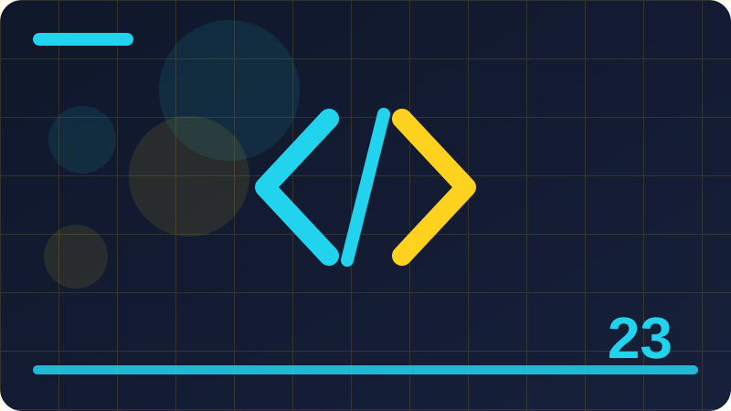

Chapter 23: Structs, Enums and Value Types

This chapter teaches structs, enums and value types in CSharp, one idea at a time, with short examples you can run and change. Each section builds on the previous one, so work through them in order the first time, then return to any section as a reference when you need it. The examples are deliberately small: they show one behaviour clearly, without the noise of a full application around them.
Section 1: What a Value Type Is
This section is about what a value type is, and it explains the idea in plain language before showing how it looks in CSharp code. By the end of this section you should be able to recognise what a value type is in real code, explain why it is used, and use it correctly in a small program of your own. A small, well-chosen example of what a value type is is worth far more than a long program that mixes several ideas at once. When you teach what a value type is to someone else, the gaps in your own understanding usually become visible very quickly, which is a gift.
Consistency matters with what a value type is: using the same pattern in similar places reduces the mental effort needed to read the whole codebase. Before finalising code that uses what a value type is, check edge cases, empty inputs, and the behaviour when a value is missing or unexpected. In CSharp, what a value type is matters because it shapes how clearly your code expresses intent to the next person who reads it. A good way to learn what a value type is is to start with one small, concrete example and then change one thing at a time. When you practise what a value type is, pay attention to what the compiler accepts, what it rejects, and why that distinction exists.
Many beginners rush past what a value type is, yet a careful hour spent here prevents confusing errors in much larger programs later. Think of what a value type is as a contract: it states what a piece of code promises, and what callers are allowed to rely on. The key idea behind what a value type is is separation: hide the details that can change, and expose only the behaviour that must stay stable. As you study what a value type is, write the example yourself rather than copying it, because typing forces you to notice every name and symbol. A helpful habit when working with what a value type is is to name things for their purpose, not for their implementation detail.
Experienced developers treat what a value type is as a design choice, not a syntax trick, and they weigh readability against flexibility before deciding. When what a value type is feels confusing, reduce the example to the smallest program that still shows the behaviour, then rebuild it step by step. One common misunderstanding about what a value type is is that it exists only for large systems, when in fact small programs benefit from it too. You can test your understanding of what a value type is by explaining it aloud in plain language without referring to code at all.
Real programs use what a value type is to keep related behaviour together, which makes testing, fixing, and extending the code far easier. Before adding complexity around what a value type is, check whether a simpler structure already gives you the behaviour you actually need.
public readonly struct Point
{
public int X { get; }
public int Y { get; }
public Point(int x, int y) => (X, Y) = (x, y);
}
public enum Direction { North, East, South, West }Check: Identify one common mistake with what a value type is and explain how to avoid it.
Section 2: Value Types Versus Reference Types
This section is about value types versus reference types, and it explains the idea in plain language before showing how it looks in CSharp code. By the end of this section you should be able to recognise value types versus reference types in real code, explain why it is used, and use it correctly in a small program of your own. Many beginners rush past value types versus reference types, yet a careful hour spent here prevents confusing errors in much larger programs later. Think of value types versus reference types as a contract: it states what a piece of code promises, and what callers are allowed to rely on.
The key idea behind value types versus reference types is separation: hide the details that can change, and expose only the behaviour that must stay stable. As you study value types versus reference types, write the example yourself rather than copying it, because typing forces you to notice every name and symbol. A helpful habit when working with value types versus reference types is to name things for their purpose, not for their implementation detail. Experienced developers treat value types versus reference types as a design choice, not a syntax trick, and they weigh readability against flexibility before deciding. When value types versus reference types feels confusing, reduce the example to the smallest program that still shows the behaviour, then rebuild it step by step.
One common misunderstanding about value types versus reference types is that it exists only for large systems, when in fact small programs benefit from it too. You can test your understanding of value types versus reference types by explaining it aloud in plain language without referring to code at all. Real programs use value types versus reference types to keep related behaviour together, which makes testing, fixing, and extending the code far easier. Before adding complexity around value types versus reference types, check whether a simpler structure already gives you the behaviour you actually need. The compiler is a useful teacher for value types versus reference types: its error messages often point directly at the rule you have just broken.
When reviewing code that uses value types versus reference types, ask what would break if this part changed, and whether that break would be easy to find. A strong mental model for value types versus reference types is to imagine the caller first, then design the smallest surface that serves that caller well. Practise value types versus reference types with inputs you expect, inputs at the boundary, and inputs that are plainly wrong, and observe each outcome. Documentation for value types versus reference types becomes much easier to write once you can state its purpose in a single clear sentence.
Teams value value types versus reference types because it lets different people work on different parts of a system without constantly breaking each other's code. If you ever feel tempted to copy a pattern involving value types versus reference types without understanding it, pause and trace one call through it first.
public readonly struct Point
{
public int X { get; }
public int Y { get; }
public Point(int x, int y) => (X, Y) = (x, y);
}
public enum Direction { North, East, South, West }Check: Explain value types versus reference types in your own words and give one example where it improves a program.
Section 3: Declaring a Struct
This section is about declaring a struct, and it explains the idea in plain language before showing how it looks in CSharp code. By the end of this section you should be able to recognise declaring a struct in real code, explain why it is used, and use it correctly in a small program of your own. One common misunderstanding about declaring a struct is that it exists only for large systems, when in fact small programs benefit from it too. You can test your understanding of declaring a struct by explaining it aloud in plain language without referring to code at all.
Real programs use declaring a struct to keep related behaviour together, which makes testing, fixing, and extending the code far easier. Before adding complexity around declaring a struct, check whether a simpler structure already gives you the behaviour you actually need. The compiler is a useful teacher for declaring a struct: its error messages often point directly at the rule you have just broken. When reviewing code that uses declaring a struct, ask what would break if this part changed, and whether that break would be easy to find. A strong mental model for declaring a struct is to imagine the caller first, then design the smallest surface that serves that caller well.
Practise declaring a struct with inputs you expect, inputs at the boundary, and inputs that are plainly wrong, and observe each outcome. Documentation for declaring a struct becomes much easier to write once you can state its purpose in a single clear sentence. Teams value declaring a struct because it lets different people work on different parts of a system without constantly breaking each other's code. If you ever feel tempted to copy a pattern involving declaring a struct without understanding it, pause and trace one call through it first. The difference between knowing declaring a struct and using it well is usually judgement: knowing when it helps, and when it gets in the way.
Try refactoring a small program to use declaring a struct, then refactor it back, and compare which version is easier to explain. Errors involving declaring a struct often come from a mismatch between what you assumed a name meant and what it actually means in context. A useful question to ask about declaring a struct is who owns this responsibility, and whether that owner is obvious from the code alone. When declaring a struct is applied consistently, new features tend to land in one obvious place instead of being scattered across the codebase.
Keep examples of declaring a struct short and focused: one idea per example makes the lesson easier to remember and reuse later. You will remember declaring a struct better if you connect it to a problem you have actually hit, rather than to an abstract definition. Reading other people's code that uses declaring a struct well is one of the fastest ways to build taste for when to use it yourself.
public readonly struct Point
{
public int X { get; }
public int Y { get; }
public Point(int x, int y) => (X, Y) = (x, y);
}
public enum Direction { North, East, South, West }Check: What problem does declaring a struct solve, and what goes wrong if you ignore it?
Section 4: Struct Constructors
This section is about struct constructors, and it explains the idea in plain language before showing how it looks in CSharp code. By the end of this section you should be able to recognise struct constructors in real code, explain why it is used, and use it correctly in a small program of your own. Practise struct constructors with inputs you expect, inputs at the boundary, and inputs that are plainly wrong, and observe each outcome. Documentation for struct constructors becomes much easier to write once you can state its purpose in a single clear sentence.
Teams value struct constructors because it lets different people work on different parts of a system without constantly breaking each other's code. If you ever feel tempted to copy a pattern involving struct constructors without understanding it, pause and trace one call through it first. The difference between knowing struct constructors and using it well is usually judgement: knowing when it helps, and when it gets in the way. Try refactoring a small program to use struct constructors, then refactor it back, and compare which version is easier to explain. Errors involving struct constructors often come from a mismatch between what you assumed a name meant and what it actually means in context.
A useful question to ask about struct constructors is who owns this responsibility, and whether that owner is obvious from the code alone. When struct constructors is applied consistently, new features tend to land in one obvious place instead of being scattered across the codebase. Keep examples of struct constructors short and focused: one idea per example makes the lesson easier to remember and reuse later. You will remember struct constructors better if you connect it to a problem you have actually hit, rather than to an abstract definition. Reading other people's code that uses struct constructors well is one of the fastest ways to build taste for when to use it yourself.
Do not be discouraged if struct constructors takes several attempts to feel natural; most reliable CSharp skills are built exactly that way. A practical test for struct constructors is whether a new team member could use your code correctly without asking you to explain it first. When you change code involving struct constructors, run the program and its tests, because a change that looks safe can still alter behaviour subtly. The best examples of struct constructors are boring in a good way: predictable, explicit, and free of clever tricks that hide what is happening.
Notice how struct constructors interacts with the rest of the language, because features rarely work in isolation in a real application. If a design involving struct constructors needs a long comment to explain it, consider whether a clearer name or structure would do that job instead. Learning struct constructors well also teaches you to read error messages calmly, treating each one as a clue rather than a judgement. A small, well-chosen example of struct constructors is worth far more than a long program that mixes several ideas at once.
public readonly struct Point
{
public int X { get; }
public int Y { get; }
public Point(int x, int y) => (X, Y) = (x, y);
}
public enum Direction { North, East, South, West }Check: Write a tiny program that demonstrates struct constructors and describe what each part does.
Section 5: Struct Fields and Properties
This section is about struct fields and properties, and it explains the idea in plain language before showing how it looks in CSharp code. By the end of this section you should be able to recognise struct fields and properties in real code, explain why it is used, and use it correctly in a small program of your own. A useful question to ask about struct fields and properties is who owns this responsibility, and whether that owner is obvious from the code alone. When struct fields and properties is applied consistently, new features tend to land in one obvious place instead of being scattered across the codebase.
Keep examples of struct fields and properties short and focused: one idea per example makes the lesson easier to remember and reuse later. You will remember struct fields and properties better if you connect it to a problem you have actually hit, rather than to an abstract definition. Reading other people's code that uses struct fields and properties well is one of the fastest ways to build taste for when to use it yourself. Do not be discouraged if struct fields and properties takes several attempts to feel natural; most reliable CSharp skills are built exactly that way. A practical test for struct fields and properties is whether a new team member could use your code correctly without asking you to explain it first.
When you change code involving struct fields and properties, run the program and its tests, because a change that looks safe can still alter behaviour subtly. The best examples of struct fields and properties are boring in a good way: predictable, explicit, and free of clever tricks that hide what is happening. Notice how struct fields and properties interacts with the rest of the language, because features rarely work in isolation in a real application. If a design involving struct fields and properties needs a long comment to explain it, consider whether a clearer name or structure would do that job instead. Learning struct fields and properties well also teaches you to read error messages calmly, treating each one as a clue rather than a judgement.
A small, well-chosen example of struct fields and properties is worth far more than a long program that mixes several ideas at once. When you teach struct fields and properties to someone else, the gaps in your own understanding usually become visible very quickly, which is a gift. Consistency matters with struct fields and properties: using the same pattern in similar places reduces the mental effort needed to read the whole codebase. Before finalising code that uses struct fields and properties, check edge cases, empty inputs, and the behaviour when a value is missing or unexpected.
In CSharp, struct fields and properties matters because it shapes how clearly your code expresses intent to the next person who reads it. A good way to learn struct fields and properties is to start with one small, concrete example and then change one thing at a time.
public readonly struct Point
{
public int X { get; }
public int Y { get; }
public Point(int x, int y) => (X, Y) = (x, y);
}
public enum Direction { North, East, South, West }Check: Compare struct fields and properties with the nearest alternative and state when you would choose each one.
Section 6: Methods in Structs
This section is about methods in structs, and it explains the idea in plain language before showing how it looks in CSharp code. By the end of this section you should be able to recognise methods in structs in real code, explain why it is used, and use it correctly in a small program of your own. When you change code involving methods in structs, run the program and its tests, because a change that looks safe can still alter behaviour subtly. The best examples of methods in structs are boring in a good way: predictable, explicit, and free of clever tricks that hide what is happening.
Notice how methods in structs interacts with the rest of the language, because features rarely work in isolation in a real application. If a design involving methods in structs needs a long comment to explain it, consider whether a clearer name or structure would do that job instead. Learning methods in structs well also teaches you to read error messages calmly, treating each one as a clue rather than a judgement. A small, well-chosen example of methods in structs is worth far more than a long program that mixes several ideas at once. When you teach methods in structs to someone else, the gaps in your own understanding usually become visible very quickly, which is a gift.
Consistency matters with methods in structs: using the same pattern in similar places reduces the mental effort needed to read the whole codebase. Before finalising code that uses methods in structs, check edge cases, empty inputs, and the behaviour when a value is missing or unexpected. In CSharp, methods in structs matters because it shapes how clearly your code expresses intent to the next person who reads it. A good way to learn methods in structs is to start with one small, concrete example and then change one thing at a time. When you practise methods in structs, pay attention to what the compiler accepts, what it rejects, and why that distinction exists.
Many beginners rush past methods in structs, yet a careful hour spent here prevents confusing errors in much larger programs later. Think of methods in structs as a contract: it states what a piece of code promises, and what callers are allowed to rely on. The key idea behind methods in structs is separation: hide the details that can change, and expose only the behaviour that must stay stable. As you study methods in structs, write the example yourself rather than copying it, because typing forces you to notice every name and symbol.
A helpful habit when working with methods in structs is to name things for their purpose, not for their implementation detail. Experienced developers treat methods in structs as a design choice, not a syntax trick, and they weigh readability against flexibility before deciding. When methods in structs feels confusing, reduce the example to the smallest program that still shows the behaviour, then rebuild it step by step.
public readonly struct Point
{
public int X { get; }
public int Y { get; }
public Point(int x, int y) => (X, Y) = (x, y);
}
public enum Direction { North, East, South, West }Check: Identify one common mistake with methods in structs and explain how to avoid it.
Section 7: Readonly Structs
This section is about readonly structs, and it explains the idea in plain language before showing how it looks in CSharp code. By the end of this section you should be able to recognise readonly structs in real code, explain why it is used, and use it correctly in a small program of your own. Consistency matters with readonly structs: using the same pattern in similar places reduces the mental effort needed to read the whole codebase. Before finalising code that uses readonly structs, check edge cases, empty inputs, and the behaviour when a value is missing or unexpected.
In CSharp, readonly structs matters because it shapes how clearly your code expresses intent to the next person who reads it. A good way to learn readonly structs is to start with one small, concrete example and then change one thing at a time. When you practise readonly structs, pay attention to what the compiler accepts, what it rejects, and why that distinction exists. Many beginners rush past readonly structs, yet a careful hour spent here prevents confusing errors in much larger programs later. Think of readonly structs as a contract: it states what a piece of code promises, and what callers are allowed to rely on.
The key idea behind readonly structs is separation: hide the details that can change, and expose only the behaviour that must stay stable. As you study readonly structs, write the example yourself rather than copying it, because typing forces you to notice every name and symbol. A helpful habit when working with readonly structs is to name things for their purpose, not for their implementation detail. Experienced developers treat readonly structs as a design choice, not a syntax trick, and they weigh readability against flexibility before deciding. When readonly structs feels confusing, reduce the example to the smallest program that still shows the behaviour, then rebuild it step by step.
One common misunderstanding about readonly structs is that it exists only for large systems, when in fact small programs benefit from it too. You can test your understanding of readonly structs by explaining it aloud in plain language without referring to code at all. Real programs use readonly structs to keep related behaviour together, which makes testing, fixing, and extending the code far easier. Before adding complexity around readonly structs, check whether a simpler structure already gives you the behaviour you actually need.
The compiler is a useful teacher for readonly structs: its error messages often point directly at the rule you have just broken. When reviewing code that uses readonly structs, ask what would break if this part changed, and whether that break would be easy to find. A strong mental model for readonly structs is to imagine the caller first, then design the smallest surface that serves that caller well. Practise readonly structs with inputs you expect, inputs at the boundary, and inputs that are plainly wrong, and observe each outcome.
Documentation for readonly structs becomes much easier to write once you can state its purpose in a single clear sentence.
public readonly struct Point
{
public int X { get; }
public int Y { get; }
public Point(int x, int y) => (X, Y) = (x, y);
}
public enum Direction { North, East, South, West }Check: Explain readonly structs in your own words and give one example where it improves a program.
Section 8: Readonly Members in Structs
This section is about readonly members in structs, and it explains the idea in plain language before showing how it looks in CSharp code. By the end of this section you should be able to recognise readonly members in structs in real code, explain why it is used, and use it correctly in a small program of your own. The key idea behind readonly members in structs is separation: hide the details that can change, and expose only the behaviour that must stay stable. As you study readonly members in structs, write the example yourself rather than copying it, because typing forces you to notice every name and symbol.
A helpful habit when working with readonly members in structs is to name things for their purpose, not for their implementation detail. Experienced developers treat readonly members in structs as a design choice, not a syntax trick, and they weigh readability against flexibility before deciding. When readonly members in structs feels confusing, reduce the example to the smallest program that still shows the behaviour, then rebuild it step by step. One common misunderstanding about readonly members in structs is that it exists only for large systems, when in fact small programs benefit from it too. You can test your understanding of readonly members in structs by explaining it aloud in plain language without referring to code at all.
Real programs use readonly members in structs to keep related behaviour together, which makes testing, fixing, and extending the code far easier. Before adding complexity around readonly members in structs, check whether a simpler structure already gives you the behaviour you actually need. The compiler is a useful teacher for readonly members in structs: its error messages often point directly at the rule you have just broken. When reviewing code that uses readonly members in structs, ask what would break if this part changed, and whether that break would be easy to find. A strong mental model for readonly members in structs is to imagine the caller first, then design the smallest surface that serves that caller well.
Practise readonly members in structs with inputs you expect, inputs at the boundary, and inputs that are plainly wrong, and observe each outcome. Documentation for readonly members in structs becomes much easier to write once you can state its purpose in a single clear sentence. Teams value readonly members in structs because it lets different people work on different parts of a system without constantly breaking each other's code. If you ever feel tempted to copy a pattern involving readonly members in structs without understanding it, pause and trace one call through it first.
The difference between knowing readonly members in structs and using it well is usually judgement: knowing when it helps, and when it gets in the way. Try refactoring a small program to use readonly members in structs, then refactor it back, and compare which version is easier to explain. Errors involving readonly members in structs often come from a mismatch between what you assumed a name meant and what it actually means in context.
public readonly struct Point
{
public int X { get; }
public int Y { get; }
public Point(int x, int y) => (X, Y) = (x, y);
}
public enum Direction { North, East, South, West }Check: What problem does readonly members in structs solve, and what goes wrong if you ignore it?
Section 9: Ref Structs and Span
This section is about ref structs and span, and it explains the idea in plain language before showing how it looks in CSharp code. By the end of this section you should be able to recognise ref structs and span in real code, explain why it is used, and use it correctly in a small program of your own. Real programs use ref structs and span to keep related behaviour together, which makes testing, fixing, and extending the code far easier. Before adding complexity around ref structs and span, check whether a simpler structure already gives you the behaviour you actually need.
The compiler is a useful teacher for ref structs and span: its error messages often point directly at the rule you have just broken. When reviewing code that uses ref structs and span, ask what would break if this part changed, and whether that break would be easy to find. A strong mental model for ref structs and span is to imagine the caller first, then design the smallest surface that serves that caller well. Practise ref structs and span with inputs you expect, inputs at the boundary, and inputs that are plainly wrong, and observe each outcome. Documentation for ref structs and span becomes much easier to write once you can state its purpose in a single clear sentence.
Teams value ref structs and span because it lets different people work on different parts of a system without constantly breaking each other's code. If you ever feel tempted to copy a pattern involving ref structs and span without understanding it, pause and trace one call through it first. The difference between knowing ref structs and span and using it well is usually judgement: knowing when it helps, and when it gets in the way. Try refactoring a small program to use ref structs and span, then refactor it back, and compare which version is easier to explain. Errors involving ref structs and span often come from a mismatch between what you assumed a name meant and what it actually means in context.
A useful question to ask about ref structs and span is who owns this responsibility, and whether that owner is obvious from the code alone. When ref structs and span is applied consistently, new features tend to land in one obvious place instead of being scattered across the codebase. Keep examples of ref structs and span short and focused: one idea per example makes the lesson easier to remember and reuse later. You will remember ref structs and span better if you connect it to a problem you have actually hit, rather than to an abstract definition.
Reading other people's code that uses ref structs and span well is one of the fastest ways to build taste for when to use it yourself. Do not be discouraged if ref structs and span takes several attempts to feel natural; most reliable CSharp skills are built exactly that way. A practical test for ref structs and span is whether a new team member could use your code correctly without asking you to explain it first.
public readonly struct Point
{
public int X { get; }
public int Y { get; }
public Point(int x, int y) => (X, Y) = (x, y);
}
public enum Direction { North, East, South, West }Check: Write a tiny program that demonstrates ref structs and span and describe what each part does.
Section 10: When to Choose a Struct
This section is about when to choose a struct, and it explains the idea in plain language before showing how it looks in CSharp code. By the end of this section you should be able to recognise when to choose a struct in real code, explain why it is used, and use it correctly in a small program of your own. Teams value when to choose a struct because it lets different people work on different parts of a system without constantly breaking each other's code. If you ever feel tempted to copy a pattern involving when to choose a struct without understanding it, pause and trace one call through it first.
The difference between knowing when to choose a struct and using it well is usually judgement: knowing when it helps, and when it gets in the way. Try refactoring a small program to use when to choose a struct, then refactor it back, and compare which version is easier to explain. Errors involving when to choose a struct often come from a mismatch between what you assumed a name meant and what it actually means in context. A useful question to ask about when to choose a struct is who owns this responsibility, and whether that owner is obvious from the code alone. When when to choose a struct is applied consistently, new features tend to land in one obvious place instead of being scattered across the codebase.
Keep examples of when to choose a struct short and focused: one idea per example makes the lesson easier to remember and reuse later. You will remember when to choose a struct better if you connect it to a problem you have actually hit, rather than to an abstract definition. Reading other people's code that uses when to choose a struct well is one of the fastest ways to build taste for when to use it yourself. Do not be discouraged if when to choose a struct takes several attempts to feel natural; most reliable CSharp skills are built exactly that way. A practical test for when to choose a struct is whether a new team member could use your code correctly without asking you to explain it first.
When you change code involving when to choose a struct, run the program and its tests, because a change that looks safe can still alter behaviour subtly. The best examples of when to choose a struct are boring in a good way: predictable, explicit, and free of clever tricks that hide what is happening. Notice how when to choose a struct interacts with the rest of the language, because features rarely work in isolation in a real application. If a design involving when to choose a struct needs a long comment to explain it, consider whether a clearer name or structure would do that job instead.
Learning when to choose a struct well also teaches you to read error messages calmly, treating each one as a clue rather than a judgement.
public readonly struct Point
{
public int X { get; }
public int Y { get; }
public Point(int x, int y) => (X, Y) = (x, y);
}
public enum Direction { North, East, South, West }Check: Compare when to choose a struct with the nearest alternative and state when you would choose each one.
Section 11: When Not to Choose a Struct
This section is about when not to choose a struct, and it explains the idea in plain language before showing how it looks in CSharp code. By the end of this section you should be able to recognise when not to choose a struct in real code, explain why it is used, and use it correctly in a small program of your own. Keep examples of when not to choose a struct short and focused: one idea per example makes the lesson easier to remember and reuse later. You will remember when not to choose a struct better if you connect it to a problem you have actually hit, rather than to an abstract definition.
Reading other people's code that uses when not to choose a struct well is one of the fastest ways to build taste for when to use it yourself. Do not be discouraged if when not to choose a struct takes several attempts to feel natural; most reliable CSharp skills are built exactly that way. A practical test for when not to choose a struct is whether a new team member could use your code correctly without asking you to explain it first. When you change code involving when not to choose a struct, run the program and its tests, because a change that looks safe can still alter behaviour subtly. The best examples of when not to choose a struct are boring in a good way: predictable, explicit, and free of clever tricks that hide what is happening.
Notice how when not to choose a struct interacts with the rest of the language, because features rarely work in isolation in a real application. If a design involving when not to choose a struct needs a long comment to explain it, consider whether a clearer name or structure would do that job instead. Learning when not to choose a struct well also teaches you to read error messages calmly, treating each one as a clue rather than a judgement. A small, well-chosen example of when not to choose a struct is worth far more than a long program that mixes several ideas at once. When you teach when not to choose a struct to someone else, the gaps in your own understanding usually become visible very quickly, which is a gift.
Consistency matters with when not to choose a struct: using the same pattern in similar places reduces the mental effort needed to read the whole codebase. Before finalising code that uses when not to choose a struct, check edge cases, empty inputs, and the behaviour when a value is missing or unexpected. In CSharp, when not to choose a struct matters because it shapes how clearly your code expresses intent to the next person who reads it. A good way to learn when not to choose a struct is to start with one small, concrete example and then change one thing at a time.
When you practise when not to choose a struct, pay attention to what the compiler accepts, what it rejects, and why that distinction exists.
public readonly struct Point
{
public int X { get; }
public int Y { get; }
public Point(int x, int y) => (X, Y) = (x, y);
}
public enum Direction { North, East, South, West }Check: Identify one common mistake with when not to choose a struct and explain how to avoid it.
Section 12: Struct Copying and Assignment
This section is about struct copying and assignment, and it explains the idea in plain language before showing how it looks in CSharp code. By the end of this section you should be able to recognise struct copying and assignment in real code, explain why it is used, and use it correctly in a small program of your own. Notice how struct copying and assignment interacts with the rest of the language, because features rarely work in isolation in a real application. If a design involving struct copying and assignment needs a long comment to explain it, consider whether a clearer name or structure would do that job instead.
Learning struct copying and assignment well also teaches you to read error messages calmly, treating each one as a clue rather than a judgement. A small, well-chosen example of struct copying and assignment is worth far more than a long program that mixes several ideas at once. When you teach struct copying and assignment to someone else, the gaps in your own understanding usually become visible very quickly, which is a gift. Consistency matters with struct copying and assignment: using the same pattern in similar places reduces the mental effort needed to read the whole codebase. Before finalising code that uses struct copying and assignment, check edge cases, empty inputs, and the behaviour when a value is missing or unexpected.
In CSharp, struct copying and assignment matters because it shapes how clearly your code expresses intent to the next person who reads it. A good way to learn struct copying and assignment is to start with one small, concrete example and then change one thing at a time. When you practise struct copying and assignment, pay attention to what the compiler accepts, what it rejects, and why that distinction exists. Many beginners rush past struct copying and assignment, yet a careful hour spent here prevents confusing errors in much larger programs later. Think of struct copying and assignment as a contract: it states what a piece of code promises, and what callers are allowed to rely on.
The key idea behind struct copying and assignment is separation: hide the details that can change, and expose only the behaviour that must stay stable. As you study struct copying and assignment, write the example yourself rather than copying it, because typing forces you to notice every name and symbol. A helpful habit when working with struct copying and assignment is to name things for their purpose, not for their implementation detail. Experienced developers treat struct copying and assignment as a design choice, not a syntax trick, and they weigh readability against flexibility before deciding.
When struct copying and assignment feels confusing, reduce the example to the smallest program that still shows the behaviour, then rebuild it step by step. One common misunderstanding about struct copying and assignment is that it exists only for large systems, when in fact small programs benefit from it too. You can test your understanding of struct copying and assignment by explaining it aloud in plain language without referring to code at all.
public readonly struct Point
{
public int X { get; }
public int Y { get; }
public Point(int x, int y) => (X, Y) = (x, y);
}
public enum Direction { North, East, South, West }Check: Explain struct copying and assignment in your own words and give one example where it improves a program.
Section 13: Mutating a Struct Through a Property
This section is about mutating a struct through a property, and it explains the idea in plain language before showing how it looks in CSharp code. By the end of this section you should be able to recognise mutating a struct through a property in real code, explain why it is used, and use it correctly in a small program of your own. In CSharp, mutating a struct through a property matters because it shapes how clearly your code expresses intent to the next person who reads it. A good way to learn mutating a struct through a property is to start with one small, concrete example and then change one thing at a time.
When you practise mutating a struct through a property, pay attention to what the compiler accepts, what it rejects, and why that distinction exists. Many beginners rush past mutating a struct through a property, yet a careful hour spent here prevents confusing errors in much larger programs later. Think of mutating a struct through a property as a contract: it states what a piece of code promises, and what callers are allowed to rely on. The key idea behind mutating a struct through a property is separation: hide the details that can change, and expose only the behaviour that must stay stable. As you study mutating a struct through a property, write the example yourself rather than copying it, because typing forces you to notice every name and symbol.
A helpful habit when working with mutating a struct through a property is to name things for their purpose, not for their implementation detail. Experienced developers treat mutating a struct through a property as a design choice, not a syntax trick, and they weigh readability against flexibility before deciding. When mutating a struct through a property feels confusing, reduce the example to the smallest program that still shows the behaviour, then rebuild it step by step. One common misunderstanding about mutating a struct through a property is that it exists only for large systems, when in fact small programs benefit from it too. You can test your understanding of mutating a struct through a property by explaining it aloud in plain language without referring to code at all.
Real programs use mutating a struct through a property to keep related behaviour together, which makes testing, fixing, and extending the code far easier. Before adding complexity around mutating a struct through a property, check whether a simpler structure already gives you the behaviour you actually need. The compiler is a useful teacher for mutating a struct through a property: its error messages often point directly at the rule you have just broken. When reviewing code that uses mutating a struct through a property, ask what would break if this part changed, and whether that break would be easy to find.
A strong mental model for mutating a struct through a property is to imagine the caller first, then design the smallest surface that serves that caller well.
public readonly struct Point
{
public int X { get; }
public int Y { get; }
public Point(int x, int y) => (X, Y) = (x, y);
}
public enum Direction { North, East, South, West }Check: What problem does mutating a struct through a property solve, and what goes wrong if you ignore it?
Section 14: Structs in Arrays and Lists
This section is about structs in arrays and lists, and it explains the idea in plain language before showing how it looks in CSharp code. By the end of this section you should be able to recognise structs in arrays and lists in real code, explain why it is used, and use it correctly in a small program of your own. A helpful habit when working with structs in arrays and lists is to name things for their purpose, not for their implementation detail. Experienced developers treat structs in arrays and lists as a design choice, not a syntax trick, and they weigh readability against flexibility before deciding.
When structs in arrays and lists feels confusing, reduce the example to the smallest program that still shows the behaviour, then rebuild it step by step. One common misunderstanding about structs in arrays and lists is that it exists only for large systems, when in fact small programs benefit from it too. You can test your understanding of structs in arrays and lists by explaining it aloud in plain language without referring to code at all. Real programs use structs in arrays and lists to keep related behaviour together, which makes testing, fixing, and extending the code far easier. Before adding complexity around structs in arrays and lists, check whether a simpler structure already gives you the behaviour you actually need.
The compiler is a useful teacher for structs in arrays and lists: its error messages often point directly at the rule you have just broken. When reviewing code that uses structs in arrays and lists, ask what would break if this part changed, and whether that break would be easy to find. A strong mental model for structs in arrays and lists is to imagine the caller first, then design the smallest surface that serves that caller well. Practise structs in arrays and lists with inputs you expect, inputs at the boundary, and inputs that are plainly wrong, and observe each outcome. Documentation for structs in arrays and lists becomes much easier to write once you can state its purpose in a single clear sentence.
Teams value structs in arrays and lists because it lets different people work on different parts of a system without constantly breaking each other's code. If you ever feel tempted to copy a pattern involving structs in arrays and lists without understanding it, pause and trace one call through it first. The difference between knowing structs in arrays and lists and using it well is usually judgement: knowing when it helps, and when it gets in the way. Try refactoring a small program to use structs in arrays and lists, then refactor it back, and compare which version is easier to explain.
Errors involving structs in arrays and lists often come from a mismatch between what you assumed a name meant and what it actually means in context. A useful question to ask about structs in arrays and lists is who owns this responsibility, and whether that owner is obvious from the code alone.
public readonly struct Point
{
public int X { get; }
public int Y { get; }
public Point(int x, int y) => (X, Y) = (x, y);
}
public enum Direction { North, East, South, West }Check: Write a tiny program that demonstrates structs in arrays and lists and describe what each part does.
Section 15: Structs and Boxing
This section is about structs and boxing, and it explains the idea in plain language before showing how it looks in CSharp code. By the end of this section you should be able to recognise structs and boxing in real code, explain why it is used, and use it correctly in a small program of your own. The compiler is a useful teacher for structs and boxing: its error messages often point directly at the rule you have just broken. When reviewing code that uses structs and boxing, ask what would break if this part changed, and whether that break would be easy to find.
A strong mental model for structs and boxing is to imagine the caller first, then design the smallest surface that serves that caller well. Practise structs and boxing with inputs you expect, inputs at the boundary, and inputs that are plainly wrong, and observe each outcome. Documentation for structs and boxing becomes much easier to write once you can state its purpose in a single clear sentence. Teams value structs and boxing because it lets different people work on different parts of a system without constantly breaking each other's code. If you ever feel tempted to copy a pattern involving structs and boxing without understanding it, pause and trace one call through it first.
The difference between knowing structs and boxing and using it well is usually judgement: knowing when it helps, and when it gets in the way. Try refactoring a small program to use structs and boxing, then refactor it back, and compare which version is easier to explain. Errors involving structs and boxing often come from a mismatch between what you assumed a name meant and what it actually means in context. A useful question to ask about structs and boxing is who owns this responsibility, and whether that owner is obvious from the code alone. When structs and boxing is applied consistently, new features tend to land in one obvious place instead of being scattered across the codebase.
Keep examples of structs and boxing short and focused: one idea per example makes the lesson easier to remember and reuse later. You will remember structs and boxing better if you connect it to a problem you have actually hit, rather than to an abstract definition. Reading other people's code that uses structs and boxing well is one of the fastest ways to build taste for when to use it yourself. Do not be discouraged if structs and boxing takes several attempts to feel natural; most reliable CSharp skills are built exactly that way.
A practical test for structs and boxing is whether a new team member could use your code correctly without asking you to explain it first. When you change code involving structs and boxing, run the program and its tests, because a change that looks safe can still alter behaviour subtly. The best examples of structs and boxing are boring in a good way: predictable, explicit, and free of clever tricks that hide what is happening.
public readonly struct Point
{
public int X { get; }
public int Y { get; }
public Point(int x, int y) => (X, Y) = (x, y);
}
public enum Direction { North, East, South, West }Check: Compare structs and boxing with the nearest alternative and state when you would choose each one.
Section 16: Avoiding Boxing with Generics
This section is about avoiding boxing with generics, and it explains the idea in plain language before showing how it looks in CSharp code. By the end of this section you should be able to recognise avoiding boxing with generics in real code, explain why it is used, and use it correctly in a small program of your own. The difference between knowing avoiding boxing with generics and using it well is usually judgement: knowing when it helps, and when it gets in the way. Try refactoring a small program to use avoiding boxing with generics, then refactor it back, and compare which version is easier to explain.
Errors involving avoiding boxing with generics often come from a mismatch between what you assumed a name meant and what it actually means in context. A useful question to ask about avoiding boxing with generics is who owns this responsibility, and whether that owner is obvious from the code alone. When avoiding boxing with generics is applied consistently, new features tend to land in one obvious place instead of being scattered across the codebase. Keep examples of avoiding boxing with generics short and focused: one idea per example makes the lesson easier to remember and reuse later. You will remember avoiding boxing with generics better if you connect it to a problem you have actually hit, rather than to an abstract definition.
Reading other people's code that uses avoiding boxing with generics well is one of the fastest ways to build taste for when to use it yourself. Do not be discouraged if avoiding boxing with generics takes several attempts to feel natural; most reliable CSharp skills are built exactly that way. A practical test for avoiding boxing with generics is whether a new team member could use your code correctly without asking you to explain it first. When you change code involving avoiding boxing with generics, run the program and its tests, because a change that looks safe can still alter behaviour subtly. The best examples of avoiding boxing with generics are boring in a good way: predictable, explicit, and free of clever tricks that hide what is happening.
Notice how avoiding boxing with generics interacts with the rest of the language, because features rarely work in isolation in a real application. If a design involving avoiding boxing with generics needs a long comment to explain it, consider whether a clearer name or structure would do that job instead. Learning avoiding boxing with generics well also teaches you to read error messages calmly, treating each one as a clue rather than a judgement. A small, well-chosen example of avoiding boxing with generics is worth far more than a long program that mixes several ideas at once.
When you teach avoiding boxing with generics to someone else, the gaps in your own understanding usually become visible very quickly, which is a gift. Consistency matters with avoiding boxing with generics: using the same pattern in similar places reduces the mental effort needed to read the whole codebase.
public readonly struct Point
{
public int X { get; }
public int Y { get; }
public Point(int x, int y) => (X, Y) = (x, y);
}
public enum Direction { North, East, South, West }Check: Identify one common mistake with avoiding boxing with generics and explain how to avoid it.
Section 17: The Default Value of a Struct
This section is about the default value of a struct, and it explains the idea in plain language before showing how it looks in CSharp code. By the end of this section you should be able to recognise the default value of a struct in real code, explain why it is used, and use it correctly in a small program of your own. Reading other people's code that uses the default value of a struct well is one of the fastest ways to build taste for when to use it yourself. Do not be discouraged if the default value of a struct takes several attempts to feel natural; most reliable CSharp skills are built exactly that way.
A practical test for the default value of a struct is whether a new team member could use your code correctly without asking you to explain it first. When you change code involving the default value of a struct, run the program and its tests, because a change that looks safe can still alter behaviour subtly. The best examples of the default value of a struct are boring in a good way: predictable, explicit, and free of clever tricks that hide what is happening. Notice how the default value of a struct interacts with the rest of the language, because features rarely work in isolation in a real application. If a design involving the default value of a struct needs a long comment to explain it, consider whether a clearer name or structure would do that job instead.
Learning the default value of a struct well also teaches you to read error messages calmly, treating each one as a clue rather than a judgement. A small, well-chosen example of the default value of a struct is worth far more than a long program that mixes several ideas at once. When you teach the default value of a struct to someone else, the gaps in your own understanding usually become visible very quickly, which is a gift. Consistency matters with the default value of a struct: using the same pattern in similar places reduces the mental effort needed to read the whole codebase. Before finalising code that uses the default value of a struct, check edge cases, empty inputs, and the behaviour when a value is missing or unexpected.
In CSharp, the default value of a struct matters because it shapes how clearly your code expresses intent to the next person who reads it. A good way to learn the default value of a struct is to start with one small, concrete example and then change one thing at a time. When you practise the default value of a struct, pay attention to what the compiler accepts, what it rejects, and why that distinction exists. Many beginners rush past the default value of a struct, yet a careful hour spent here prevents confusing errors in much larger programs later.
Think of the default value of a struct as a contract: it states what a piece of code promises, and what callers are allowed to rely on.
public readonly struct Point
{
public int X { get; }
public int Y { get; }
public Point(int x, int y) => (X, Y) = (x, y);
}
public enum Direction { North, East, South, West }Check: Explain the default value of a struct in your own words and give one example where it improves a program.
Section 18: Nullable Value Types
This section is about nullable value types, and it explains the idea in plain language before showing how it looks in CSharp code. By the end of this section you should be able to recognise nullable value types in real code, explain why it is used, and use it correctly in a small program of your own. Learning nullable value types well also teaches you to read error messages calmly, treating each one as a clue rather than a judgement. A small, well-chosen example of nullable value types is worth far more than a long program that mixes several ideas at once.
When you teach nullable value types to someone else, the gaps in your own understanding usually become visible very quickly, which is a gift. Consistency matters with nullable value types: using the same pattern in similar places reduces the mental effort needed to read the whole codebase. Before finalising code that uses nullable value types, check edge cases, empty inputs, and the behaviour when a value is missing or unexpected. In CSharp, nullable value types matters because it shapes how clearly your code expresses intent to the next person who reads it. A good way to learn nullable value types is to start with one small, concrete example and then change one thing at a time.
When you practise nullable value types, pay attention to what the compiler accepts, what it rejects, and why that distinction exists. Many beginners rush past nullable value types, yet a careful hour spent here prevents confusing errors in much larger programs later. Think of nullable value types as a contract: it states what a piece of code promises, and what callers are allowed to rely on. The key idea behind nullable value types is separation: hide the details that can change, and expose only the behaviour that must stay stable. As you study nullable value types, write the example yourself rather than copying it, because typing forces you to notice every name and symbol.
A helpful habit when working with nullable value types is to name things for their purpose, not for their implementation detail. Experienced developers treat nullable value types as a design choice, not a syntax trick, and they weigh readability against flexibility before deciding. When nullable value types feels confusing, reduce the example to the smallest program that still shows the behaviour, then rebuild it step by step. One common misunderstanding about nullable value types is that it exists only for large systems, when in fact small programs benefit from it too.
You can test your understanding of nullable value types by explaining it aloud in plain language without referring to code at all. Real programs use nullable value types to keep related behaviour together, which makes testing, fixing, and extending the code far easier. Before adding complexity around nullable value types, check whether a simpler structure already gives you the behaviour you actually need. The compiler is a useful teacher for nullable value types: its error messages often point directly at the rule you have just broken.
public readonly struct Point
{
public int X { get; }
public int Y { get; }
public Point(int x, int y) => (X, Y) = (x, y);
}
public enum Direction { North, East, South, West }Check: What problem does nullable value types solve, and what goes wrong if you ignore it?
Section 19: Nullable Structs in Practice
This section is about nullable structs in practice, and it explains the idea in plain language before showing how it looks in CSharp code. By the end of this section you should be able to recognise nullable structs in practice in real code, explain why it is used, and use it correctly in a small program of your own. When you practise nullable structs in practice, pay attention to what the compiler accepts, what it rejects, and why that distinction exists. Many beginners rush past nullable structs in practice, yet a careful hour spent here prevents confusing errors in much larger programs later.
Think of nullable structs in practice as a contract: it states what a piece of code promises, and what callers are allowed to rely on. The key idea behind nullable structs in practice is separation: hide the details that can change, and expose only the behaviour that must stay stable. As you study nullable structs in practice, write the example yourself rather than copying it, because typing forces you to notice every name and symbol. A helpful habit when working with nullable structs in practice is to name things for their purpose, not for their implementation detail. Experienced developers treat nullable structs in practice as a design choice, not a syntax trick, and they weigh readability against flexibility before deciding.
When nullable structs in practice feels confusing, reduce the example to the smallest program that still shows the behaviour, then rebuild it step by step. One common misunderstanding about nullable structs in practice is that it exists only for large systems, when in fact small programs benefit from it too. You can test your understanding of nullable structs in practice by explaining it aloud in plain language without referring to code at all. Real programs use nullable structs in practice to keep related behaviour together, which makes testing, fixing, and extending the code far easier. Before adding complexity around nullable structs in practice, check whether a simpler structure already gives you the behaviour you actually need.
The compiler is a useful teacher for nullable structs in practice: its error messages often point directly at the rule you have just broken. When reviewing code that uses nullable structs in practice, ask what would break if this part changed, and whether that break would be easy to find. A strong mental model for nullable structs in practice is to imagine the caller first, then design the smallest surface that serves that caller well. Practise nullable structs in practice with inputs you expect, inputs at the boundary, and inputs that are plainly wrong, and observe each outcome.
Documentation for nullable structs in practice becomes much easier to write once you can state its purpose in a single clear sentence. Teams value nullable structs in practice because it lets different people work on different parts of a system without constantly breaking each other's code. If you ever feel tempted to copy a pattern involving nullable structs in practice without understanding it, pause and trace one call through it first.
public readonly struct Point
{
public int X { get; }
public int Y { get; }
public Point(int x, int y) => (X, Y) = (x, y);
}
public enum Direction { North, East, South, West }Check: Write a tiny program that demonstrates nullable structs in practice and describe what each part does.
Section 20: What an Enum Is
This section is about what an enum is, and it explains the idea in plain language before showing how it looks in CSharp code. By the end of this section you should be able to recognise what an enum is in real code, explain why it is used, and use it correctly in a small program of your own. When what an enum is feels confusing, reduce the example to the smallest program that still shows the behaviour, then rebuild it step by step. One common misunderstanding about what an enum is is that it exists only for large systems, when in fact small programs benefit from it too.
You can test your understanding of what an enum is by explaining it aloud in plain language without referring to code at all. Real programs use what an enum is to keep related behaviour together, which makes testing, fixing, and extending the code far easier. Before adding complexity around what an enum is, check whether a simpler structure already gives you the behaviour you actually need. The compiler is a useful teacher for what an enum is: its error messages often point directly at the rule you have just broken. When reviewing code that uses what an enum is, ask what would break if this part changed, and whether that break would be easy to find.
A strong mental model for what an enum is is to imagine the caller first, then design the smallest surface that serves that caller well. Practise what an enum is with inputs you expect, inputs at the boundary, and inputs that are plainly wrong, and observe each outcome. Documentation for what an enum is becomes much easier to write once you can state its purpose in a single clear sentence. Teams value what an enum is because it lets different people work on different parts of a system without constantly breaking each other's code. If you ever feel tempted to copy a pattern involving what an enum is without understanding it, pause and trace one call through it first.
The difference between knowing what an enum is and using it well is usually judgement: knowing when it helps, and when it gets in the way. Try refactoring a small program to use what an enum is, then refactor it back, and compare which version is easier to explain. Errors involving what an enum is often come from a mismatch between what you assumed a name meant and what it actually means in context. A useful question to ask about what an enum is is who owns this responsibility, and whether that owner is obvious from the code alone.
When what an enum is is applied consistently, new features tend to land in one obvious place instead of being scattered across the codebase. Keep examples of what an enum is short and focused: one idea per example makes the lesson easier to remember and reuse later. You will remember what an enum is better if you connect it to a problem you have actually hit, rather than to an abstract definition.
public readonly struct Point
{
public int X { get; }
public int Y { get; }
public Point(int x, int y) => (X, Y) = (x, y);
}
public enum Direction { North, East, South, West }Check: Compare what an enum is with the nearest alternative and state when you would choose each one.
Section 21: Declaring an Enum
This section is about declaring an enum, and it explains the idea in plain language before showing how it looks in CSharp code. By the end of this section you should be able to recognise declaring an enum in real code, explain why it is used, and use it correctly in a small program of your own. A strong mental model for declaring an enum is to imagine the caller first, then design the smallest surface that serves that caller well. Practise declaring an enum with inputs you expect, inputs at the boundary, and inputs that are plainly wrong, and observe each outcome.
Documentation for declaring an enum becomes much easier to write once you can state its purpose in a single clear sentence. Teams value declaring an enum because it lets different people work on different parts of a system without constantly breaking each other's code. If you ever feel tempted to copy a pattern involving declaring an enum without understanding it, pause and trace one call through it first. The difference between knowing declaring an enum and using it well is usually judgement: knowing when it helps, and when it gets in the way. Try refactoring a small program to use declaring an enum, then refactor it back, and compare which version is easier to explain.
Errors involving declaring an enum often come from a mismatch between what you assumed a name meant and what it actually means in context. A useful question to ask about declaring an enum is who owns this responsibility, and whether that owner is obvious from the code alone. When declaring an enum is applied consistently, new features tend to land in one obvious place instead of being scattered across the codebase. Keep examples of declaring an enum short and focused: one idea per example makes the lesson easier to remember and reuse later. You will remember declaring an enum better if you connect it to a problem you have actually hit, rather than to an abstract definition.
Reading other people's code that uses declaring an enum well is one of the fastest ways to build taste for when to use it yourself. Do not be discouraged if declaring an enum takes several attempts to feel natural; most reliable CSharp skills are built exactly that way. A practical test for declaring an enum is whether a new team member could use your code correctly without asking you to explain it first. When you change code involving declaring an enum, run the program and its tests, because a change that looks safe can still alter behaviour subtly.
The best examples of declaring an enum are boring in a good way: predictable, explicit, and free of clever tricks that hide what is happening. Notice how declaring an enum interacts with the rest of the language, because features rarely work in isolation in a real application. If a design involving declaring an enum needs a long comment to explain it, consider whether a clearer name or structure would do that job instead.
public readonly struct Point
{
public int X { get; }
public int Y { get; }
public Point(int x, int y) => (X, Y) = (x, y);
}
public enum Direction { North, East, South, West }Check: Identify one common mistake with declaring an enum and explain how to avoid it.
Section 22: Enum Underlying Types
This section is about enum underlying types, and it explains the idea in plain language before showing how it looks in CSharp code. By the end of this section you should be able to recognise enum underlying types in real code, explain why it is used, and use it correctly in a small program of your own. Errors involving enum underlying types often come from a mismatch between what you assumed a name meant and what it actually means in context. A useful question to ask about enum underlying types is who owns this responsibility, and whether that owner is obvious from the code alone.
When enum underlying types is applied consistently, new features tend to land in one obvious place instead of being scattered across the codebase. Keep examples of enum underlying types short and focused: one idea per example makes the lesson easier to remember and reuse later. You will remember enum underlying types better if you connect it to a problem you have actually hit, rather than to an abstract definition. Reading other people's code that uses enum underlying types well is one of the fastest ways to build taste for when to use it yourself. Do not be discouraged if enum underlying types takes several attempts to feel natural; most reliable CSharp skills are built exactly that way.
A practical test for enum underlying types is whether a new team member could use your code correctly without asking you to explain it first. When you change code involving enum underlying types, run the program and its tests, because a change that looks safe can still alter behaviour subtly. The best examples of enum underlying types are boring in a good way: predictable, explicit, and free of clever tricks that hide what is happening. Notice how enum underlying types interacts with the rest of the language, because features rarely work in isolation in a real application. If a design involving enum underlying types needs a long comment to explain it, consider whether a clearer name or structure would do that job instead.
Learning enum underlying types well also teaches you to read error messages calmly, treating each one as a clue rather than a judgement. A small, well-chosen example of enum underlying types is worth far more than a long program that mixes several ideas at once. When you teach enum underlying types to someone else, the gaps in your own understanding usually become visible very quickly, which is a gift. Consistency matters with enum underlying types: using the same pattern in similar places reduces the mental effort needed to read the whole codebase.
Before finalising code that uses enum underlying types, check edge cases, empty inputs, and the behaviour when a value is missing or unexpected. In CSharp, enum underlying types matters because it shapes how clearly your code expresses intent to the next person who reads it. A good way to learn enum underlying types is to start with one small, concrete example and then change one thing at a time.
public readonly struct Point
{
public int X { get; }
public int Y { get; }
public Point(int x, int y) => (X, Y) = (x, y);
}
public enum Direction { North, East, South, West }Check: Explain enum underlying types in your own words and give one example where it improves a program.
Section 23: Enum Values and Naming
This section is about enum values and naming, and it explains the idea in plain language before showing how it looks in CSharp code. By the end of this section you should be able to recognise enum values and naming in real code, explain why it is used, and use it correctly in a small program of your own. A practical test for enum values and naming is whether a new team member could use your code correctly without asking you to explain it first. When you change code involving enum values and naming, run the program and its tests, because a change that looks safe can still alter behaviour subtly.
The best examples of enum values and naming are boring in a good way: predictable, explicit, and free of clever tricks that hide what is happening. Notice how enum values and naming interacts with the rest of the language, because features rarely work in isolation in a real application. If a design involving enum values and naming needs a long comment to explain it, consider whether a clearer name or structure would do that job instead. Learning enum values and naming well also teaches you to read error messages calmly, treating each one as a clue rather than a judgement. A small, well-chosen example of enum values and naming is worth far more than a long program that mixes several ideas at once.
When you teach enum values and naming to someone else, the gaps in your own understanding usually become visible very quickly, which is a gift. Consistency matters with enum values and naming: using the same pattern in similar places reduces the mental effort needed to read the whole codebase. Before finalising code that uses enum values and naming, check edge cases, empty inputs, and the behaviour when a value is missing or unexpected. In CSharp, enum values and naming matters because it shapes how clearly your code expresses intent to the next person who reads it. A good way to learn enum values and naming is to start with one small, concrete example and then change one thing at a time.
When you practise enum values and naming, pay attention to what the compiler accepts, what it rejects, and why that distinction exists. Many beginners rush past enum values and naming, yet a careful hour spent here prevents confusing errors in much larger programs later. Think of enum values and naming as a contract: it states what a piece of code promises, and what callers are allowed to rely on. The key idea behind enum values and naming is separation: hide the details that can change, and expose only the behaviour that must stay stable.
As you study enum values and naming, write the example yourself rather than copying it, because typing forces you to notice every name and symbol. A helpful habit when working with enum values and naming is to name things for their purpose, not for their implementation detail.
public readonly struct Point
{
public int X { get; }
public int Y { get; }
public Point(int x, int y) => (X, Y) = (x, y);
}
public enum Direction { North, East, South, West }Check: What problem does enum values and naming solve, and what goes wrong if you ignore it?
Section 24: Casting Between Enums and Integers
This section is about casting between enums and integers, and it explains the idea in plain language before showing how it looks in CSharp code. By the end of this section you should be able to recognise casting between enums and integers in real code, explain why it is used, and use it correctly in a small program of your own. When you teach casting between enums and integers to someone else, the gaps in your own understanding usually become visible very quickly, which is a gift. Consistency matters with casting between enums and integers: using the same pattern in similar places reduces the mental effort needed to read the whole codebase.
Before finalising code that uses casting between enums and integers, check edge cases, empty inputs, and the behaviour when a value is missing or unexpected. In CSharp, casting between enums and integers matters because it shapes how clearly your code expresses intent to the next person who reads it. A good way to learn casting between enums and integers is to start with one small, concrete example and then change one thing at a time. When you practise casting between enums and integers, pay attention to what the compiler accepts, what it rejects, and why that distinction exists. Many beginners rush past casting between enums and integers, yet a careful hour spent here prevents confusing errors in much larger programs later.
Think of casting between enums and integers as a contract: it states what a piece of code promises, and what callers are allowed to rely on. The key idea behind casting between enums and integers is separation: hide the details that can change, and expose only the behaviour that must stay stable. As you study casting between enums and integers, write the example yourself rather than copying it, because typing forces you to notice every name and symbol. A helpful habit when working with casting between enums and integers is to name things for their purpose, not for their implementation detail. Experienced developers treat casting between enums and integers as a design choice, not a syntax trick, and they weigh readability against flexibility before deciding.
When casting between enums and integers feels confusing, reduce the example to the smallest program that still shows the behaviour, then rebuild it step by step. One common misunderstanding about casting between enums and integers is that it exists only for large systems, when in fact small programs benefit from it too. You can test your understanding of casting between enums and integers by explaining it aloud in plain language without referring to code at all. Real programs use casting between enums and integers to keep related behaviour together, which makes testing, fixing, and extending the code far easier.
Before adding complexity around casting between enums and integers, check whether a simpler structure already gives you the behaviour you actually need. The compiler is a useful teacher for casting between enums and integers: its error messages often point directly at the rule you have just broken.
public readonly struct Point
{
public int X { get; }
public int Y { get; }
public Point(int x, int y) => (X, Y) = (x, y);
}
public enum Direction { North, East, South, West }Check: Write a tiny program that demonstrates casting between enums and integers and describe what each part does.
Section 25: Parsing Enums from Strings
This section is about parsing enums from strings, and it explains the idea in plain language before showing how it looks in CSharp code. By the end of this section you should be able to recognise parsing enums from strings in real code, explain why it is used, and use it correctly in a small program of your own. Think of parsing enums from strings as a contract: it states what a piece of code promises, and what callers are allowed to rely on. The key idea behind parsing enums from strings is separation: hide the details that can change, and expose only the behaviour that must stay stable.
As you study parsing enums from strings, write the example yourself rather than copying it, because typing forces you to notice every name and symbol. A helpful habit when working with parsing enums from strings is to name things for their purpose, not for their implementation detail. Experienced developers treat parsing enums from strings as a design choice, not a syntax trick, and they weigh readability against flexibility before deciding. When parsing enums from strings feels confusing, reduce the example to the smallest program that still shows the behaviour, then rebuild it step by step. One common misunderstanding about parsing enums from strings is that it exists only for large systems, when in fact small programs benefit from it too.
You can test your understanding of parsing enums from strings by explaining it aloud in plain language without referring to code at all. Real programs use parsing enums from strings to keep related behaviour together, which makes testing, fixing, and extending the code far easier. Before adding complexity around parsing enums from strings, check whether a simpler structure already gives you the behaviour you actually need. The compiler is a useful teacher for parsing enums from strings: its error messages often point directly at the rule you have just broken. When reviewing code that uses parsing enums from strings, ask what would break if this part changed, and whether that break would be easy to find.
A strong mental model for parsing enums from strings is to imagine the caller first, then design the smallest surface that serves that caller well. Practise parsing enums from strings with inputs you expect, inputs at the boundary, and inputs that are plainly wrong, and observe each outcome. Documentation for parsing enums from strings becomes much easier to write once you can state its purpose in a single clear sentence. Teams value parsing enums from strings because it lets different people work on different parts of a system without constantly breaking each other's code.
If you ever feel tempted to copy a pattern involving parsing enums from strings without understanding it, pause and trace one call through it first. The difference between knowing parsing enums from strings and using it well is usually judgement: knowing when it helps, and when it gets in the way. Try refactoring a small program to use parsing enums from strings, then refactor it back, and compare which version is easier to explain.
public readonly struct Point
{
public int X { get; }
public int Y { get; }
public Point(int x, int y) => (X, Y) = (x, y);
}
public enum Direction { North, East, South, West }Check: Compare parsing enums from strings with the nearest alternative and state when you would choose each one.
Section 26: Enum Flags and Bitwise Combinations
This section is about enum flags and bitwise combinations, and it explains the idea in plain language before showing how it looks in CSharp code. By the end of this section you should be able to recognise enum flags and bitwise combinations in real code, explain why it is used, and use it correctly in a small program of your own. You can test your understanding of enum flags and bitwise combinations by explaining it aloud in plain language without referring to code at all. Real programs use enum flags and bitwise combinations to keep related behaviour together, which makes testing, fixing, and extending the code far easier.
Before adding complexity around enum flags and bitwise combinations, check whether a simpler structure already gives you the behaviour you actually need. The compiler is a useful teacher for enum flags and bitwise combinations: its error messages often point directly at the rule you have just broken. When reviewing code that uses enum flags and bitwise combinations, ask what would break if this part changed, and whether that break would be easy to find. A strong mental model for enum flags and bitwise combinations is to imagine the caller first, then design the smallest surface that serves that caller well. Practise enum flags and bitwise combinations with inputs you expect, inputs at the boundary, and inputs that are plainly wrong, and observe each outcome.
Documentation for enum flags and bitwise combinations becomes much easier to write once you can state its purpose in a single clear sentence. Teams value enum flags and bitwise combinations because it lets different people work on different parts of a system without constantly breaking each other's code. If you ever feel tempted to copy a pattern involving enum flags and bitwise combinations without understanding it, pause and trace one call through it first. The difference between knowing enum flags and bitwise combinations and using it well is usually judgement: knowing when it helps, and when it gets in the way. Try refactoring a small program to use enum flags and bitwise combinations, then refactor it back, and compare which version is easier to explain.
Errors involving enum flags and bitwise combinations often come from a mismatch between what you assumed a name meant and what it actually means in context. A useful question to ask about enum flags and bitwise combinations is who owns this responsibility, and whether that owner is obvious from the code alone. When enum flags and bitwise combinations is applied consistently, new features tend to land in one obvious place instead of being scattered across the codebase. Keep examples of enum flags and bitwise combinations short and focused: one idea per example makes the lesson easier to remember and reuse later.
You will remember enum flags and bitwise combinations better if you connect it to a problem you have actually hit, rather than to an abstract definition. Reading other people's code that uses enum flags and bitwise combinations well is one of the fastest ways to build taste for when to use it yourself.
public readonly struct Point
{
public int X { get; }
public int Y { get; }
public Point(int x, int y) => (X, Y) = (x, y);
}
public enum Direction { North, East, South, West }Check: Identify one common mistake with enum flags and bitwise combinations and explain how to avoid it.
Section 27: The Flags Attribute Explained
This section is about the flags attribute explained, and it explains the idea in plain language before showing how it looks in CSharp code. By the end of this section you should be able to recognise the flags attribute explained in real code, explain why it is used, and use it correctly in a small program of your own. Documentation for the flags attribute explained becomes much easier to write once you can state its purpose in a single clear sentence. Teams value the flags attribute explained because it lets different people work on different parts of a system without constantly breaking each other's code.
If you ever feel tempted to copy a pattern involving the flags attribute explained without understanding it, pause and trace one call through it first. The difference between knowing the flags attribute explained and using it well is usually judgement: knowing when it helps, and when it gets in the way. Try refactoring a small program to use the flags attribute explained, then refactor it back, and compare which version is easier to explain. Errors involving the flags attribute explained often come from a mismatch between what you assumed a name meant and what it actually means in context. A useful question to ask about the flags attribute explained is who owns this responsibility, and whether that owner is obvious from the code alone.
When the flags attribute explained is applied consistently, new features tend to land in one obvious place instead of being scattered across the codebase. Keep examples of the flags attribute explained short and focused: one idea per example makes the lesson easier to remember and reuse later. You will remember the flags attribute explained better if you connect it to a problem you have actually hit, rather than to an abstract definition. Reading other people's code that uses the flags attribute explained well is one of the fastest ways to build taste for when to use it yourself. Do not be discouraged if the flags attribute explained takes several attempts to feel natural; most reliable CSharp skills are built exactly that way.
A practical test for the flags attribute explained is whether a new team member could use your code correctly without asking you to explain it first. When you change code involving the flags attribute explained, run the program and its tests, because a change that looks safe can still alter behaviour subtly. The best examples of the flags attribute explained are boring in a good way: predictable, explicit, and free of clever tricks that hide what is happening. Notice how the flags attribute explained interacts with the rest of the language, because features rarely work in isolation in a real application.
If a design involving the flags attribute explained needs a long comment to explain it, consider whether a clearer name or structure would do that job instead. Learning the flags attribute explained well also teaches you to read error messages calmly, treating each one as a clue rather than a judgement.
public readonly struct Point
{
public int X { get; }
public int Y { get; }
public Point(int x, int y) => (X, Y) = (x, y);
}
public enum Direction { North, East, South, West }Check: Explain the flags attribute explained in your own words and give one example where it improves a program.
Section 28: Switching Over Enum Values
This section is about switching over enum values, and it explains the idea in plain language before showing how it looks in CSharp code. By the end of this section you should be able to recognise switching over enum values in real code, explain why it is used, and use it correctly in a small program of your own. When switching over enum values is applied consistently, new features tend to land in one obvious place instead of being scattered across the codebase. Keep examples of switching over enum values short and focused: one idea per example makes the lesson easier to remember and reuse later.
You will remember switching over enum values better if you connect it to a problem you have actually hit, rather than to an abstract definition. Reading other people's code that uses switching over enum values well is one of the fastest ways to build taste for when to use it yourself. Do not be discouraged if switching over enum values takes several attempts to feel natural; most reliable CSharp skills are built exactly that way. A practical test for switching over enum values is whether a new team member could use your code correctly without asking you to explain it first. When you change code involving switching over enum values, run the program and its tests, because a change that looks safe can still alter behaviour subtly.
The best examples of switching over enum values are boring in a good way: predictable, explicit, and free of clever tricks that hide what is happening. Notice how switching over enum values interacts with the rest of the language, because features rarely work in isolation in a real application. If a design involving switching over enum values needs a long comment to explain it, consider whether a clearer name or structure would do that job instead. Learning switching over enum values well also teaches you to read error messages calmly, treating each one as a clue rather than a judgement. A small, well-chosen example of switching over enum values is worth far more than a long program that mixes several ideas at once.
When you teach switching over enum values to someone else, the gaps in your own understanding usually become visible very quickly, which is a gift. Consistency matters with switching over enum values: using the same pattern in similar places reduces the mental effort needed to read the whole codebase. Before finalising code that uses switching over enum values, check edge cases, empty inputs, and the behaviour when a value is missing or unexpected. In CSharp, switching over enum values matters because it shapes how clearly your code expresses intent to the next person who reads it.
A good way to learn switching over enum values is to start with one small, concrete example and then change one thing at a time. When you practise switching over enum values, pay attention to what the compiler accepts, what it rejects, and why that distinction exists.
public readonly struct Point
{
public int X { get; }
public int Y { get; }
public Point(int x, int y) => (X, Y) = (x, y);
}
public enum Direction { North, East, South, West }Check: What problem does switching over enum values solve, and what goes wrong if you ignore it?
Section 29: Enums in APIs and Configuration
This section is about enums in apis and configuration, and it explains the idea in plain language before showing how it looks in CSharp code. By the end of this section you should be able to recognise enums in apis and configuration in real code, explain why it is used, and use it correctly in a small program of your own. The best examples of enums in apis and configuration are boring in a good way: predictable, explicit, and free of clever tricks that hide what is happening. Notice how enums in apis and configuration interacts with the rest of the language, because features rarely work in isolation in a real application.
If a design involving enums in apis and configuration needs a long comment to explain it, consider whether a clearer name or structure would do that job instead. Learning enums in apis and configuration well also teaches you to read error messages calmly, treating each one as a clue rather than a judgement. A small, well-chosen example of enums in apis and configuration is worth far more than a long program that mixes several ideas at once. When you teach enums in apis and configuration to someone else, the gaps in your own understanding usually become visible very quickly, which is a gift. Consistency matters with enums in apis and configuration: using the same pattern in similar places reduces the mental effort needed to read the whole codebase.
Before finalising code that uses enums in apis and configuration, check edge cases, empty inputs, and the behaviour when a value is missing or unexpected. In CSharp, enums in apis and configuration matters because it shapes how clearly your code expresses intent to the next person who reads it. A good way to learn enums in apis and configuration is to start with one small, concrete example and then change one thing at a time. When you practise enums in apis and configuration, pay attention to what the compiler accepts, what it rejects, and why that distinction exists. Many beginners rush past enums in apis and configuration, yet a careful hour spent here prevents confusing errors in much larger programs later.
Think of enums in apis and configuration as a contract: it states what a piece of code promises, and what callers are allowed to rely on. The key idea behind enums in apis and configuration is separation: hide the details that can change, and expose only the behaviour that must stay stable. As you study enums in apis and configuration, write the example yourself rather than copying it, because typing forces you to notice every name and symbol. A helpful habit when working with enums in apis and configuration is to name things for their purpose, not for their implementation detail.
Experienced developers treat enums in apis and configuration as a design choice, not a syntax trick, and they weigh readability against flexibility before deciding. When enums in apis and configuration feels confusing, reduce the example to the smallest program that still shows the behaviour, then rebuild it step by step.
public readonly struct Point
{
public int X { get; }
public int Y { get; }
public Point(int x, int y) => (X, Y) = (x, y);
}
public enum Direction { North, East, South, West }Check: Write a tiny program that demonstrates enums in apis and configuration and describe what each part does.
Section 30: Enums Versus String Constants
This section is about enums versus string constants, and it explains the idea in plain language before showing how it looks in CSharp code. By the end of this section you should be able to recognise enums versus string constants in real code, explain why it is used, and use it correctly in a small program of your own. Before finalising code that uses enums versus string constants, check edge cases, empty inputs, and the behaviour when a value is missing or unexpected. In CSharp, enums versus string constants matters because it shapes how clearly your code expresses intent to the next person who reads it.
A good way to learn enums versus string constants is to start with one small, concrete example and then change one thing at a time. When you practise enums versus string constants, pay attention to what the compiler accepts, what it rejects, and why that distinction exists. Many beginners rush past enums versus string constants, yet a careful hour spent here prevents confusing errors in much larger programs later. Think of enums versus string constants as a contract: it states what a piece of code promises, and what callers are allowed to rely on. The key idea behind enums versus string constants is separation: hide the details that can change, and expose only the behaviour that must stay stable.
As you study enums versus string constants, write the example yourself rather than copying it, because typing forces you to notice every name and symbol. A helpful habit when working with enums versus string constants is to name things for their purpose, not for their implementation detail. Experienced developers treat enums versus string constants as a design choice, not a syntax trick, and they weigh readability against flexibility before deciding. When enums versus string constants feels confusing, reduce the example to the smallest program that still shows the behaviour, then rebuild it step by step. One common misunderstanding about enums versus string constants is that it exists only for large systems, when in fact small programs benefit from it too.
You can test your understanding of enums versus string constants by explaining it aloud in plain language without referring to code at all. Real programs use enums versus string constants to keep related behaviour together, which makes testing, fixing, and extending the code far easier. Before adding complexity around enums versus string constants, check whether a simpler structure already gives you the behaviour you actually need. The compiler is a useful teacher for enums versus string constants: its error messages often point directly at the rule you have just broken.
When reviewing code that uses enums versus string constants, ask what would break if this part changed, and whether that break would be easy to find. A strong mental model for enums versus string constants is to imagine the caller first, then design the smallest surface that serves that caller well. Practise enums versus string constants with inputs you expect, inputs at the boundary, and inputs that are plainly wrong, and observe each outcome.
public readonly struct Point
{
public int X { get; }
public int Y { get; }
public Point(int x, int y) => (X, Y) = (x, y);
}
public enum Direction { North, East, South, West }Check: Compare enums versus string constants with the nearest alternative and state when you would choose each one.
Section 31: Enums Versus Static Classes
This section is about enums versus static classes, and it explains the idea in plain language before showing how it looks in CSharp code. By the end of this section you should be able to recognise enums versus static classes in real code, explain why it is used, and use it correctly in a small program of your own. As you study enums versus static classes, write the example yourself rather than copying it, because typing forces you to notice every name and symbol. A helpful habit when working with enums versus static classes is to name things for their purpose, not for their implementation detail.
Experienced developers treat enums versus static classes as a design choice, not a syntax trick, and they weigh readability against flexibility before deciding. When enums versus static classes feels confusing, reduce the example to the smallest program that still shows the behaviour, then rebuild it step by step. One common misunderstanding about enums versus static classes is that it exists only for large systems, when in fact small programs benefit from it too. You can test your understanding of enums versus static classes by explaining it aloud in plain language without referring to code at all. Real programs use enums versus static classes to keep related behaviour together, which makes testing, fixing, and extending the code far easier.
Before adding complexity around enums versus static classes, check whether a simpler structure already gives you the behaviour you actually need. The compiler is a useful teacher for enums versus static classes: its error messages often point directly at the rule you have just broken. When reviewing code that uses enums versus static classes, ask what would break if this part changed, and whether that break would be easy to find. A strong mental model for enums versus static classes is to imagine the caller first, then design the smallest surface that serves that caller well. Practise enums versus static classes with inputs you expect, inputs at the boundary, and inputs that are plainly wrong, and observe each outcome.
Documentation for enums versus static classes becomes much easier to write once you can state its purpose in a single clear sentence. Teams value enums versus static classes because it lets different people work on different parts of a system without constantly breaking each other's code. If you ever feel tempted to copy a pattern involving enums versus static classes without understanding it, pause and trace one call through it first. The difference between knowing enums versus static classes and using it well is usually judgement: knowing when it helps, and when it gets in the way.
Try refactoring a small program to use enums versus static classes, then refactor it back, and compare which version is easier to explain. Errors involving enums versus static classes often come from a mismatch between what you assumed a name meant and what it actually means in context. A useful question to ask about enums versus static classes is who owns this responsibility, and whether that owner is obvious from the code alone.
public readonly struct Point
{
public int X { get; }
public int Y { get; }
public Point(int x, int y) => (X, Y) = (x, y);
}
public enum Direction { North, East, South, West }Check: Identify one common mistake with enums versus static classes and explain how to avoid it.
Section 32: Structs for Coordinates and Points
This section is about structs for coordinates and points, and it explains the idea in plain language before showing how it looks in CSharp code. By the end of this section you should be able to recognise structs for coordinates and points in real code, explain why it is used, and use it correctly in a small program of your own. Before adding complexity around structs for coordinates and points, check whether a simpler structure already gives you the behaviour you actually need. The compiler is a useful teacher for structs for coordinates and points: its error messages often point directly at the rule you have just broken.
When reviewing code that uses structs for coordinates and points, ask what would break if this part changed, and whether that break would be easy to find. A strong mental model for structs for coordinates and points is to imagine the caller first, then design the smallest surface that serves that caller well. Practise structs for coordinates and points with inputs you expect, inputs at the boundary, and inputs that are plainly wrong, and observe each outcome. Documentation for structs for coordinates and points becomes much easier to write once you can state its purpose in a single clear sentence. Teams value structs for coordinates and points because it lets different people work on different parts of a system without constantly breaking each other's code.
If you ever feel tempted to copy a pattern involving structs for coordinates and points without understanding it, pause and trace one call through it first. The difference between knowing structs for coordinates and points and using it well is usually judgement: knowing when it helps, and when it gets in the way. Try refactoring a small program to use structs for coordinates and points, then refactor it back, and compare which version is easier to explain. Errors involving structs for coordinates and points often come from a mismatch between what you assumed a name meant and what it actually means in context. A useful question to ask about structs for coordinates and points is who owns this responsibility, and whether that owner is obvious from the code alone.
When structs for coordinates and points is applied consistently, new features tend to land in one obvious place instead of being scattered across the codebase. Keep examples of structs for coordinates and points short and focused: one idea per example makes the lesson easier to remember and reuse later. You will remember structs for coordinates and points better if you connect it to a problem you have actually hit, rather than to an abstract definition. Reading other people's code that uses structs for coordinates and points well is one of the fastest ways to build taste for when to use it yourself.
Do not be discouraged if structs for coordinates and points takes several attempts to feel natural; most reliable CSharp skills are built exactly that way. A practical test for structs for coordinates and points is whether a new team member could use your code correctly without asking you to explain it first.
public readonly struct Point
{
public int X { get; }
public int Y { get; }
public Point(int x, int y) => (X, Y) = (x, y);
}
public enum Direction { North, East, South, West }Check: Explain structs for coordinates and points in your own words and give one example where it improves a program.
Section 33: Structs for Money and Quantities
This section is about structs for money and quantities, and it explains the idea in plain language before showing how it looks in CSharp code. By the end of this section you should be able to recognise structs for money and quantities in real code, explain why it is used, and use it correctly in a small program of your own. If you ever feel tempted to copy a pattern involving structs for money and quantities without understanding it, pause and trace one call through it first. The difference between knowing structs for money and quantities and using it well is usually judgement: knowing when it helps, and when it gets in the way.
Try refactoring a small program to use structs for money and quantities, then refactor it back, and compare which version is easier to explain. Errors involving structs for money and quantities often come from a mismatch between what you assumed a name meant and what it actually means in context. A useful question to ask about structs for money and quantities is who owns this responsibility, and whether that owner is obvious from the code alone. When structs for money and quantities is applied consistently, new features tend to land in one obvious place instead of being scattered across the codebase. Keep examples of structs for money and quantities short and focused: one idea per example makes the lesson easier to remember and reuse later.
You will remember structs for money and quantities better if you connect it to a problem you have actually hit, rather than to an abstract definition. Reading other people's code that uses structs for money and quantities well is one of the fastest ways to build taste for when to use it yourself. Do not be discouraged if structs for money and quantities takes several attempts to feel natural; most reliable CSharp skills are built exactly that way. A practical test for structs for money and quantities is whether a new team member could use your code correctly without asking you to explain it first. When you change code involving structs for money and quantities, run the program and its tests, because a change that looks safe can still alter behaviour subtly.
The best examples of structs for money and quantities are boring in a good way: predictable, explicit, and free of clever tricks that hide what is happening. Notice how structs for money and quantities interacts with the rest of the language, because features rarely work in isolation in a real application. If a design involving structs for money and quantities needs a long comment to explain it, consider whether a clearer name or structure would do that job instead. Learning structs for money and quantities well also teaches you to read error messages calmly, treating each one as a clue rather than a judgement.
A small, well-chosen example of structs for money and quantities is worth far more than a long program that mixes several ideas at once.
public readonly struct Point
{
public int X { get; }
public int Y { get; }
public Point(int x, int y) => (X, Y) = (x, y);
}
public enum Direction { North, East, South, West }Check: What problem does structs for money and quantities solve, and what goes wrong if you ignore it?
Section 34: DateOnly TimeOnly and DateTime
This section is about dateonly timeonly and datetime, and it explains the idea in plain language before showing how it looks in CSharp code. By the end of this section you should be able to recognise dateonly timeonly and datetime in real code, explain why it is used, and use it correctly in a small program of your own. You will remember dateonly timeonly and datetime better if you connect it to a problem you have actually hit, rather than to an abstract definition. Reading other people's code that uses dateonly timeonly and datetime well is one of the fastest ways to build taste for when to use it yourself.
Do not be discouraged if dateonly timeonly and datetime takes several attempts to feel natural; most reliable CSharp skills are built exactly that way. A practical test for dateonly timeonly and datetime is whether a new team member could use your code correctly without asking you to explain it first. When you change code involving dateonly timeonly and datetime, run the program and its tests, because a change that looks safe can still alter behaviour subtly. The best examples of dateonly timeonly and datetime are boring in a good way: predictable, explicit, and free of clever tricks that hide what is happening. Notice how dateonly timeonly and datetime interacts with the rest of the language, because features rarely work in isolation in a real application.
If a design involving dateonly timeonly and datetime needs a long comment to explain it, consider whether a clearer name or structure would do that job instead. Learning dateonly timeonly and datetime well also teaches you to read error messages calmly, treating each one as a clue rather than a judgement. A small, well-chosen example of dateonly timeonly and datetime is worth far more than a long program that mixes several ideas at once. When you teach dateonly timeonly and datetime to someone else, the gaps in your own understanding usually become visible very quickly, which is a gift. Consistency matters with dateonly timeonly and datetime: using the same pattern in similar places reduces the mental effort needed to read the whole codebase.
Before finalising code that uses dateonly timeonly and datetime, check edge cases, empty inputs, and the behaviour when a value is missing or unexpected. In CSharp, dateonly timeonly and datetime matters because it shapes how clearly your code expresses intent to the next person who reads it. A good way to learn dateonly timeonly and datetime is to start with one small, concrete example and then change one thing at a time. When you practise dateonly timeonly and datetime, pay attention to what the compiler accepts, what it rejects, and why that distinction exists.
Many beginners rush past dateonly timeonly and datetime, yet a careful hour spent here prevents confusing errors in much larger programs later. Think of dateonly timeonly and datetime as a contract: it states what a piece of code promises, and what callers are allowed to rely on.
public readonly struct Point
{
public int X { get; }
public int Y { get; }
public Point(int x, int y) => (X, Y) = (x, y);
}
public enum Direction { North, East, South, West }Check: Write a tiny program that demonstrates dateonly timeonly and datetime and describe what each part does.
Section 35: Guid as a Value Type
This section is about guid as a value type, and it explains the idea in plain language before showing how it looks in CSharp code. By the end of this section you should be able to recognise guid as a value type in real code, explain why it is used, and use it correctly in a small program of your own. If a design involving guid as a value type needs a long comment to explain it, consider whether a clearer name or structure would do that job instead. Learning guid as a value type well also teaches you to read error messages calmly, treating each one as a clue rather than a judgement.
A small, well-chosen example of guid as a value type is worth far more than a long program that mixes several ideas at once. When you teach guid as a value type to someone else, the gaps in your own understanding usually become visible very quickly, which is a gift. Consistency matters with guid as a value type: using the same pattern in similar places reduces the mental effort needed to read the whole codebase. Before finalising code that uses guid as a value type, check edge cases, empty inputs, and the behaviour when a value is missing or unexpected. In CSharp, guid as a value type matters because it shapes how clearly your code expresses intent to the next person who reads it.
A good way to learn guid as a value type is to start with one small, concrete example and then change one thing at a time. When you practise guid as a value type, pay attention to what the compiler accepts, what it rejects, and why that distinction exists. Many beginners rush past guid as a value type, yet a careful hour spent here prevents confusing errors in much larger programs later. Think of guid as a value type as a contract: it states what a piece of code promises, and what callers are allowed to rely on. The key idea behind guid as a value type is separation: hide the details that can change, and expose only the behaviour that must stay stable.
As you study guid as a value type, write the example yourself rather than copying it, because typing forces you to notice every name and symbol. A helpful habit when working with guid as a value type is to name things for their purpose, not for their implementation detail. Experienced developers treat guid as a value type as a design choice, not a syntax trick, and they weigh readability against flexibility before deciding. When guid as a value type feels confusing, reduce the example to the smallest program that still shows the behaviour, then rebuild it step by step.
One common misunderstanding about guid as a value type is that it exists only for large systems, when in fact small programs benefit from it too. You can test your understanding of guid as a value type by explaining it aloud in plain language without referring to code at all.
public readonly struct Point
{
public int X { get; }
public int Y { get; }
public Point(int x, int y) => (X, Y) = (x, y);
}
public enum Direction { North, East, South, West }Check: Compare guid as a value type with the nearest alternative and state when you would choose each one.
Section 36: Decimal Versus Double for Money
This section is about decimal versus double for money, and it explains the idea in plain language before showing how it looks in CSharp code. By the end of this section you should be able to recognise decimal versus double for money in real code, explain why it is used, and use it correctly in a small program of your own. A good way to learn decimal versus double for money is to start with one small, concrete example and then change one thing at a time. When you practise decimal versus double for money, pay attention to what the compiler accepts, what it rejects, and why that distinction exists.
Many beginners rush past decimal versus double for money, yet a careful hour spent here prevents confusing errors in much larger programs later. Think of decimal versus double for money as a contract: it states what a piece of code promises, and what callers are allowed to rely on. The key idea behind decimal versus double for money is separation: hide the details that can change, and expose only the behaviour that must stay stable. As you study decimal versus double for money, write the example yourself rather than copying it, because typing forces you to notice every name and symbol. A helpful habit when working with decimal versus double for money is to name things for their purpose, not for their implementation detail.
Experienced developers treat decimal versus double for money as a design choice, not a syntax trick, and they weigh readability against flexibility before deciding. When decimal versus double for money feels confusing, reduce the example to the smallest program that still shows the behaviour, then rebuild it step by step. One common misunderstanding about decimal versus double for money is that it exists only for large systems, when in fact small programs benefit from it too. You can test your understanding of decimal versus double for money by explaining it aloud in plain language without referring to code at all. Real programs use decimal versus double for money to keep related behaviour together, which makes testing, fixing, and extending the code far easier.
Before adding complexity around decimal versus double for money, check whether a simpler structure already gives you the behaviour you actually need. The compiler is a useful teacher for decimal versus double for money: its error messages often point directly at the rule you have just broken. When reviewing code that uses decimal versus double for money, ask what would break if this part changed, and whether that break would be easy to find. A strong mental model for decimal versus double for money is to imagine the caller first, then design the smallest surface that serves that caller well.
Practise decimal versus double for money with inputs you expect, inputs at the boundary, and inputs that are plainly wrong, and observe each outcome. Documentation for decimal versus double for money becomes much easier to write once you can state its purpose in a single clear sentence.
public readonly struct Point
{
public int X { get; }
public int Y { get; }
public Point(int x, int y) => (X, Y) = (x, y);
}
public enum Direction { North, East, South, West }Check: Identify one common mistake with decimal versus double for money and explain how to avoid it.
Section 37: Integer Types and Overflow
This section is about integer types and overflow, and it explains the idea in plain language before showing how it looks in CSharp code. By the end of this section you should be able to recognise integer types and overflow in real code, explain why it is used, and use it correctly in a small program of your own. Experienced developers treat integer types and overflow as a design choice, not a syntax trick, and they weigh readability against flexibility before deciding. When integer types and overflow feels confusing, reduce the example to the smallest program that still shows the behaviour, then rebuild it step by step.
One common misunderstanding about integer types and overflow is that it exists only for large systems, when in fact small programs benefit from it too. You can test your understanding of integer types and overflow by explaining it aloud in plain language without referring to code at all. Real programs use integer types and overflow to keep related behaviour together, which makes testing, fixing, and extending the code far easier. Before adding complexity around integer types and overflow, check whether a simpler structure already gives you the behaviour you actually need. The compiler is a useful teacher for integer types and overflow: its error messages often point directly at the rule you have just broken.
When reviewing code that uses integer types and overflow, ask what would break if this part changed, and whether that break would be easy to find. A strong mental model for integer types and overflow is to imagine the caller first, then design the smallest surface that serves that caller well. Practise integer types and overflow with inputs you expect, inputs at the boundary, and inputs that are plainly wrong, and observe each outcome. Documentation for integer types and overflow becomes much easier to write once you can state its purpose in a single clear sentence. Teams value integer types and overflow because it lets different people work on different parts of a system without constantly breaking each other's code.
If you ever feel tempted to copy a pattern involving integer types and overflow without understanding it, pause and trace one call through it first. The difference between knowing integer types and overflow and using it well is usually judgement: knowing when it helps, and when it gets in the way. Try refactoring a small program to use integer types and overflow, then refactor it back, and compare which version is easier to explain. Errors involving integer types and overflow often come from a mismatch between what you assumed a name meant and what it actually means in context.
A useful question to ask about integer types and overflow is who owns this responsibility, and whether that owner is obvious from the code alone. When integer types and overflow is applied consistently, new features tend to land in one obvious place instead of being scattered across the codebase. Keep examples of integer types and overflow short and focused: one idea per example makes the lesson easier to remember and reuse later.
public readonly struct Point
{
public int X { get; }
public int Y { get; }
public Point(int x, int y) => (X, Y) = (x, y);
}
public enum Direction { North, East, South, West }Check: Explain integer types and overflow in your own words and give one example where it improves a program.
Section 38: Checked Arithmetic for Integers
This section is about checked arithmetic for integers, and it explains the idea in plain language before showing how it looks in CSharp code. By the end of this section you should be able to recognise checked arithmetic for integers in real code, explain why it is used, and use it correctly in a small program of your own. When reviewing code that uses checked arithmetic for integers, ask what would break if this part changed, and whether that break would be easy to find. A strong mental model for checked arithmetic for integers is to imagine the caller first, then design the smallest surface that serves that caller well.
Practise checked arithmetic for integers with inputs you expect, inputs at the boundary, and inputs that are plainly wrong, and observe each outcome. Documentation for checked arithmetic for integers becomes much easier to write once you can state its purpose in a single clear sentence. Teams value checked arithmetic for integers because it lets different people work on different parts of a system without constantly breaking each other's code. If you ever feel tempted to copy a pattern involving checked arithmetic for integers without understanding it, pause and trace one call through it first. The difference between knowing checked arithmetic for integers and using it well is usually judgement: knowing when it helps, and when it gets in the way.
Try refactoring a small program to use checked arithmetic for integers, then refactor it back, and compare which version is easier to explain. Errors involving checked arithmetic for integers often come from a mismatch between what you assumed a name meant and what it actually means in context. A useful question to ask about checked arithmetic for integers is who owns this responsibility, and whether that owner is obvious from the code alone. When checked arithmetic for integers is applied consistently, new features tend to land in one obvious place instead of being scattered across the codebase. Keep examples of checked arithmetic for integers short and focused: one idea per example makes the lesson easier to remember and reuse later.
You will remember checked arithmetic for integers better if you connect it to a problem you have actually hit, rather than to an abstract definition. Reading other people's code that uses checked arithmetic for integers well is one of the fastest ways to build taste for when to use it yourself. Do not be discouraged if checked arithmetic for integers takes several attempts to feel natural; most reliable CSharp skills are built exactly that way. A practical test for checked arithmetic for integers is whether a new team member could use your code correctly without asking you to explain it first.
When you change code involving checked arithmetic for integers, run the program and its tests, because a change that looks safe can still alter behaviour subtly. The best examples of checked arithmetic for integers are boring in a good way: predictable, explicit, and free of clever tricks that hide what is happening.
public readonly struct Point
{
public int X { get; }
public int Y { get; }
public Point(int x, int y) => (X, Y) = (x, y);
}
public enum Direction { North, East, South, West }Check: What problem does checked arithmetic for integers solve, and what goes wrong if you ignore it?
Section 39: Tuples as Lightweight Value Types
This section is about tuples as lightweight value types, and it explains the idea in plain language before showing how it looks in CSharp code. By the end of this section you should be able to recognise tuples as lightweight value types in real code, explain why it is used, and use it correctly in a small program of your own. Try refactoring a small program to use tuples as lightweight value types, then refactor it back, and compare which version is easier to explain. Errors involving tuples as lightweight value types often come from a mismatch between what you assumed a name meant and what it actually means in context.
A useful question to ask about tuples as lightweight value types is who owns this responsibility, and whether that owner is obvious from the code alone. When tuples as lightweight value types is applied consistently, new features tend to land in one obvious place instead of being scattered across the codebase. Keep examples of tuples as lightweight value types short and focused: one idea per example makes the lesson easier to remember and reuse later. You will remember tuples as lightweight value types better if you connect it to a problem you have actually hit, rather than to an abstract definition. Reading other people's code that uses tuples as lightweight value types well is one of the fastest ways to build taste for when to use it yourself.
Do not be discouraged if tuples as lightweight value types takes several attempts to feel natural; most reliable CSharp skills are built exactly that way. A practical test for tuples as lightweight value types is whether a new team member could use your code correctly without asking you to explain it first. When you change code involving tuples as lightweight value types, run the program and its tests, because a change that looks safe can still alter behaviour subtly. The best examples of tuples as lightweight value types are boring in a good way: predictable, explicit, and free of clever tricks that hide what is happening. Notice how tuples as lightweight value types interacts with the rest of the language, because features rarely work in isolation in a real application.
If a design involving tuples as lightweight value types needs a long comment to explain it, consider whether a clearer name or structure would do that job instead. Learning tuples as lightweight value types well also teaches you to read error messages calmly, treating each one as a clue rather than a judgement. A small, well-chosen example of tuples as lightweight value types is worth far more than a long program that mixes several ideas at once. When you teach tuples as lightweight value types to someone else, the gaps in your own understanding usually become visible very quickly, which is a gift.
Consistency matters with tuples as lightweight value types: using the same pattern in similar places reduces the mental effort needed to read the whole codebase.
public readonly struct Point
{
public int X { get; }
public int Y { get; }
public Point(int x, int y) => (X, Y) = (x, y);
}
public enum Direction { North, East, South, West }Check: Write a tiny program that demonstrates tuples as lightweight value types and describe what each part does.
Section 40: ValueTuple Versus Tuple
This section is about valuetuple versus tuple, and it explains the idea in plain language before showing how it looks in CSharp code. By the end of this section you should be able to recognise valuetuple versus tuple in real code, explain why it is used, and use it correctly in a small program of your own. Do not be discouraged if valuetuple versus tuple takes several attempts to feel natural; most reliable CSharp skills are built exactly that way. A practical test for valuetuple versus tuple is whether a new team member could use your code correctly without asking you to explain it first.
When you change code involving valuetuple versus tuple, run the program and its tests, because a change that looks safe can still alter behaviour subtly. The best examples of valuetuple versus tuple are boring in a good way: predictable, explicit, and free of clever tricks that hide what is happening. Notice how valuetuple versus tuple interacts with the rest of the language, because features rarely work in isolation in a real application. If a design involving valuetuple versus tuple needs a long comment to explain it, consider whether a clearer name or structure would do that job instead. Learning valuetuple versus tuple well also teaches you to read error messages calmly, treating each one as a clue rather than a judgement.
A small, well-chosen example of valuetuple versus tuple is worth far more than a long program that mixes several ideas at once. When you teach valuetuple versus tuple to someone else, the gaps in your own understanding usually become visible very quickly, which is a gift. Consistency matters with valuetuple versus tuple: using the same pattern in similar places reduces the mental effort needed to read the whole codebase. Before finalising code that uses valuetuple versus tuple, check edge cases, empty inputs, and the behaviour when a value is missing or unexpected. In CSharp, valuetuple versus tuple matters because it shapes how clearly your code expresses intent to the next person who reads it.
A good way to learn valuetuple versus tuple is to start with one small, concrete example and then change one thing at a time. When you practise valuetuple versus tuple, pay attention to what the compiler accepts, what it rejects, and why that distinction exists. Many beginners rush past valuetuple versus tuple, yet a careful hour spent here prevents confusing errors in much larger programs later. Think of valuetuple versus tuple as a contract: it states what a piece of code promises, and what callers are allowed to rely on.
The key idea behind valuetuple versus tuple is separation: hide the details that can change, and expose only the behaviour that must stay stable. As you study valuetuple versus tuple, write the example yourself rather than copying it, because typing forces you to notice every name and symbol. A helpful habit when working with valuetuple versus tuple is to name things for their purpose, not for their implementation detail.
public readonly struct Point
{
public int X { get; }
public int Y { get; }
public Point(int x, int y) => (X, Y) = (x, y);
}
public enum Direction { North, East, South, West }Check: Compare valuetuple versus tuple with the nearest alternative and state when you would choose each one.
Section 41: Deconstructing a Tuple
This section is about deconstructing a tuple, and it explains the idea in plain language before showing how it looks in CSharp code. By the end of this section you should be able to recognise deconstructing a tuple in real code, explain why it is used, and use it correctly in a small program of your own. A small, well-chosen example of deconstructing a tuple is worth far more than a long program that mixes several ideas at once. When you teach deconstructing a tuple to someone else, the gaps in your own understanding usually become visible very quickly, which is a gift.
Consistency matters with deconstructing a tuple: using the same pattern in similar places reduces the mental effort needed to read the whole codebase. Before finalising code that uses deconstructing a tuple, check edge cases, empty inputs, and the behaviour when a value is missing or unexpected. In CSharp, deconstructing a tuple matters because it shapes how clearly your code expresses intent to the next person who reads it. A good way to learn deconstructing a tuple is to start with one small, concrete example and then change one thing at a time. When you practise deconstructing a tuple, pay attention to what the compiler accepts, what it rejects, and why that distinction exists.
Many beginners rush past deconstructing a tuple, yet a careful hour spent here prevents confusing errors in much larger programs later. Think of deconstructing a tuple as a contract: it states what a piece of code promises, and what callers are allowed to rely on. The key idea behind deconstructing a tuple is separation: hide the details that can change, and expose only the behaviour that must stay stable. As you study deconstructing a tuple, write the example yourself rather than copying it, because typing forces you to notice every name and symbol. A helpful habit when working with deconstructing a tuple is to name things for their purpose, not for their implementation detail.
Experienced developers treat deconstructing a tuple as a design choice, not a syntax trick, and they weigh readability against flexibility before deciding. When deconstructing a tuple feels confusing, reduce the example to the smallest program that still shows the behaviour, then rebuild it step by step. One common misunderstanding about deconstructing a tuple is that it exists only for large systems, when in fact small programs benefit from it too. You can test your understanding of deconstructing a tuple by explaining it aloud in plain language without referring to code at all.
Real programs use deconstructing a tuple to keep related behaviour together, which makes testing, fixing, and extending the code far easier. Before adding complexity around deconstructing a tuple, check whether a simpler structure already gives you the behaviour you actually need. The compiler is a useful teacher for deconstructing a tuple: its error messages often point directly at the rule you have just broken. When reviewing code that uses deconstructing a tuple, ask what would break if this part changed, and whether that break would be easy to find.
public readonly struct Point
{
public int X { get; }
public int Y { get; }
public Point(int x, int y) => (X, Y) = (x, y);
}
public enum Direction { North, East, South, West }Check: Identify one common mistake with deconstructing a tuple and explain how to avoid it.
Section 42: Struct Equality and GetHashCode
This section is about struct equality and gethashcode, and it explains the idea in plain language before showing how it looks in CSharp code. By the end of this section you should be able to recognise struct equality and gethashcode in real code, explain why it is used, and use it correctly in a small program of your own. Many beginners rush past struct equality and gethashcode, yet a careful hour spent here prevents confusing errors in much larger programs later. Think of struct equality and gethashcode as a contract: it states what a piece of code promises, and what callers are allowed to rely on.
The key idea behind struct equality and gethashcode is separation: hide the details that can change, and expose only the behaviour that must stay stable. As you study struct equality and gethashcode, write the example yourself rather than copying it, because typing forces you to notice every name and symbol. A helpful habit when working with struct equality and gethashcode is to name things for their purpose, not for their implementation detail. Experienced developers treat struct equality and gethashcode as a design choice, not a syntax trick, and they weigh readability against flexibility before deciding. When struct equality and gethashcode feels confusing, reduce the example to the smallest program that still shows the behaviour, then rebuild it step by step.
One common misunderstanding about struct equality and gethashcode is that it exists only for large systems, when in fact small programs benefit from it too. You can test your understanding of struct equality and gethashcode by explaining it aloud in plain language without referring to code at all. Real programs use struct equality and gethashcode to keep related behaviour together, which makes testing, fixing, and extending the code far easier. Before adding complexity around struct equality and gethashcode, check whether a simpler structure already gives you the behaviour you actually need. The compiler is a useful teacher for struct equality and gethashcode: its error messages often point directly at the rule you have just broken.
When reviewing code that uses struct equality and gethashcode, ask what would break if this part changed, and whether that break would be easy to find. A strong mental model for struct equality and gethashcode is to imagine the caller first, then design the smallest surface that serves that caller well. Practise struct equality and gethashcode with inputs you expect, inputs at the boundary, and inputs that are plainly wrong, and observe each outcome. Documentation for struct equality and gethashcode becomes much easier to write once you can state its purpose in a single clear sentence.
Teams value struct equality and gethashcode because it lets different people work on different parts of a system without constantly breaking each other's code. If you ever feel tempted to copy a pattern involving struct equality and gethashcode without understanding it, pause and trace one call through it first. The difference between knowing struct equality and gethashcode and using it well is usually judgement: knowing when it helps, and when it gets in the way.
public readonly struct Point
{
public int X { get; }
public int Y { get; }
public Point(int x, int y) => (X, Y) = (x, y);
}
public enum Direction { North, East, South, West }Check: Explain struct equality and gethashcode in your own words and give one example where it improves a program.
Section 43: Implementing IEquatable for a Struct
This section is about implementing iequatable for a struct, and it explains the idea in plain language before showing how it looks in CSharp code. By the end of this section you should be able to recognise implementing iequatable for a struct in real code, explain why it is used, and use it correctly in a small program of your own. One common misunderstanding about implementing iequatable for a struct is that it exists only for large systems, when in fact small programs benefit from it too. You can test your understanding of implementing iequatable for a struct by explaining it aloud in plain language without referring to code at all.
Real programs use implementing iequatable for a struct to keep related behaviour together, which makes testing, fixing, and extending the code far easier. Before adding complexity around implementing iequatable for a struct, check whether a simpler structure already gives you the behaviour you actually need. The compiler is a useful teacher for implementing iequatable for a struct: its error messages often point directly at the rule you have just broken. When reviewing code that uses implementing iequatable for a struct, ask what would break if this part changed, and whether that break would be easy to find. A strong mental model for implementing iequatable for a struct is to imagine the caller first, then design the smallest surface that serves that caller well.
Practise implementing iequatable for a struct with inputs you expect, inputs at the boundary, and inputs that are plainly wrong, and observe each outcome. Documentation for implementing iequatable for a struct becomes much easier to write once you can state its purpose in a single clear sentence. Teams value implementing iequatable for a struct because it lets different people work on different parts of a system without constantly breaking each other's code. If you ever feel tempted to copy a pattern involving implementing iequatable for a struct without understanding it, pause and trace one call through it first. The difference between knowing implementing iequatable for a struct and using it well is usually judgement: knowing when it helps, and when it gets in the way.
Try refactoring a small program to use implementing iequatable for a struct, then refactor it back, and compare which version is easier to explain. Errors involving implementing iequatable for a struct often come from a mismatch between what you assumed a name meant and what it actually means in context. A useful question to ask about implementing iequatable for a struct is who owns this responsibility, and whether that owner is obvious from the code alone. When implementing iequatable for a struct is applied consistently, new features tend to land in one obvious place instead of being scattered across the codebase.
Keep examples of implementing iequatable for a struct short and focused: one idea per example makes the lesson easier to remember and reuse later. You will remember implementing iequatable for a struct better if you connect it to a problem you have actually hit, rather than to an abstract definition.
public readonly struct Point
{
public int X { get; }
public int Y { get; }
public Point(int x, int y) => (X, Y) = (x, y);
}
public enum Direction { North, East, South, West }Check: What problem does implementing iequatable for a struct solve, and what goes wrong if you ignore it?
Section 44: Operator Overloading in Structs
This section is about operator overloading in structs, and it explains the idea in plain language before showing how it looks in CSharp code. By the end of this section you should be able to recognise operator overloading in structs in real code, explain why it is used, and use it correctly in a small program of your own. Practise operator overloading in structs with inputs you expect, inputs at the boundary, and inputs that are plainly wrong, and observe each outcome. Documentation for operator overloading in structs becomes much easier to write once you can state its purpose in a single clear sentence.
Teams value operator overloading in structs because it lets different people work on different parts of a system without constantly breaking each other's code. If you ever feel tempted to copy a pattern involving operator overloading in structs without understanding it, pause and trace one call through it first. The difference between knowing operator overloading in structs and using it well is usually judgement: knowing when it helps, and when it gets in the way. Try refactoring a small program to use operator overloading in structs, then refactor it back, and compare which version is easier to explain. Errors involving operator overloading in structs often come from a mismatch between what you assumed a name meant and what it actually means in context.
A useful question to ask about operator overloading in structs is who owns this responsibility, and whether that owner is obvious from the code alone. When operator overloading in structs is applied consistently, new features tend to land in one obvious place instead of being scattered across the codebase. Keep examples of operator overloading in structs short and focused: one idea per example makes the lesson easier to remember and reuse later. You will remember operator overloading in structs better if you connect it to a problem you have actually hit, rather than to an abstract definition. Reading other people's code that uses operator overloading in structs well is one of the fastest ways to build taste for when to use it yourself.
Do not be discouraged if operator overloading in structs takes several attempts to feel natural; most reliable CSharp skills are built exactly that way. A practical test for operator overloading in structs is whether a new team member could use your code correctly without asking you to explain it first. When you change code involving operator overloading in structs, run the program and its tests, because a change that looks safe can still alter behaviour subtly. The best examples of operator overloading in structs are boring in a good way: predictable, explicit, and free of clever tricks that hide what is happening.
Notice how operator overloading in structs interacts with the rest of the language, because features rarely work in isolation in a real application. If a design involving operator overloading in structs needs a long comment to explain it, consider whether a clearer name or structure would do that job instead.
public readonly struct Point
{
public int X { get; }
public int Y { get; }
public Point(int x, int y) => (X, Y) = (x, y);
}
public enum Direction { North, East, South, West }Check: Write a tiny program that demonstrates operator overloading in structs and describe what each part does.
Section 45: Structs and Performance
This section is about structs and performance, and it explains the idea in plain language before showing how it looks in CSharp code. By the end of this section you should be able to recognise structs and performance in real code, explain why it is used, and use it correctly in a small program of your own. A useful question to ask about structs and performance is who owns this responsibility, and whether that owner is obvious from the code alone. When structs and performance is applied consistently, new features tend to land in one obvious place instead of being scattered across the codebase.
Keep examples of structs and performance short and focused: one idea per example makes the lesson easier to remember and reuse later. You will remember structs and performance better if you connect it to a problem you have actually hit, rather than to an abstract definition. Reading other people's code that uses structs and performance well is one of the fastest ways to build taste for when to use it yourself. Do not be discouraged if structs and performance takes several attempts to feel natural; most reliable CSharp skills are built exactly that way. A practical test for structs and performance is whether a new team member could use your code correctly without asking you to explain it first.
When you change code involving structs and performance, run the program and its tests, because a change that looks safe can still alter behaviour subtly. The best examples of structs and performance are boring in a good way: predictable, explicit, and free of clever tricks that hide what is happening. Notice how structs and performance interacts with the rest of the language, because features rarely work in isolation in a real application. If a design involving structs and performance needs a long comment to explain it, consider whether a clearer name or structure would do that job instead. Learning structs and performance well also teaches you to read error messages calmly, treating each one as a clue rather than a judgement.
A small, well-chosen example of structs and performance is worth far more than a long program that mixes several ideas at once. When you teach structs and performance to someone else, the gaps in your own understanding usually become visible very quickly, which is a gift. Consistency matters with structs and performance: using the same pattern in similar places reduces the mental effort needed to read the whole codebase. Before finalising code that uses structs and performance, check edge cases, empty inputs, and the behaviour when a value is missing or unexpected.
In CSharp, structs and performance matters because it shapes how clearly your code expresses intent to the next person who reads it. A good way to learn structs and performance is to start with one small, concrete example and then change one thing at a time. When you practise structs and performance, pay attention to what the compiler accepts, what it rejects, and why that distinction exists.
public readonly struct Point
{
public int X { get; }
public int Y { get; }
public Point(int x, int y) => (X, Y) = (x, y);
}
public enum Direction { North, East, South, West }Check: Compare structs and performance with the nearest alternative and state when you would choose each one.
Section 46: Memory Layout of Structs
This section is about memory layout of structs, and it explains the idea in plain language before showing how it looks in CSharp code. By the end of this section you should be able to recognise memory layout of structs in real code, explain why it is used, and use it correctly in a small program of your own. When you change code involving memory layout of structs, run the program and its tests, because a change that looks safe can still alter behaviour subtly. The best examples of memory layout of structs are boring in a good way: predictable, explicit, and free of clever tricks that hide what is happening.
Notice how memory layout of structs interacts with the rest of the language, because features rarely work in isolation in a real application. If a design involving memory layout of structs needs a long comment to explain it, consider whether a clearer name or structure would do that job instead. Learning memory layout of structs well also teaches you to read error messages calmly, treating each one as a clue rather than a judgement. A small, well-chosen example of memory layout of structs is worth far more than a long program that mixes several ideas at once. When you teach memory layout of structs to someone else, the gaps in your own understanding usually become visible very quickly, which is a gift.
Consistency matters with memory layout of structs: using the same pattern in similar places reduces the mental effort needed to read the whole codebase. Before finalising code that uses memory layout of structs, check edge cases, empty inputs, and the behaviour when a value is missing or unexpected. In CSharp, memory layout of structs matters because it shapes how clearly your code expresses intent to the next person who reads it. A good way to learn memory layout of structs is to start with one small, concrete example and then change one thing at a time. When you practise memory layout of structs, pay attention to what the compiler accepts, what it rejects, and why that distinction exists.
Many beginners rush past memory layout of structs, yet a careful hour spent here prevents confusing errors in much larger programs later. Think of memory layout of structs as a contract: it states what a piece of code promises, and what callers are allowed to rely on. The key idea behind memory layout of structs is separation: hide the details that can change, and expose only the behaviour that must stay stable. As you study memory layout of structs, write the example yourself rather than copying it, because typing forces you to notice every name and symbol.
A helpful habit when working with memory layout of structs is to name things for their purpose, not for their implementation detail. Experienced developers treat memory layout of structs as a design choice, not a syntax trick, and they weigh readability against flexibility before deciding. When memory layout of structs feels confusing, reduce the example to the smallest program that still shows the behaviour, then rebuild it step by step.
public readonly struct Point
{
public int X { get; }
public int Y { get; }
public Point(int x, int y) => (X, Y) = (x, y);
}
public enum Direction { North, East, South, West }Check: Identify one common mistake with memory layout of structs and explain how to avoid it.
Section 47: Common Mistakes with Structs
This section is about common mistakes with structs, and it explains the idea in plain language before showing how it looks in CSharp code. By the end of this section you should be able to recognise common mistakes with structs in real code, explain why it is used, and use it correctly in a small program of your own. Consistency matters with common mistakes with structs: using the same pattern in similar places reduces the mental effort needed to read the whole codebase. Before finalising code that uses common mistakes with structs, check edge cases, empty inputs, and the behaviour when a value is missing or unexpected.
In CSharp, common mistakes with structs matters because it shapes how clearly your code expresses intent to the next person who reads it. A good way to learn common mistakes with structs is to start with one small, concrete example and then change one thing at a time. When you practise common mistakes with structs, pay attention to what the compiler accepts, what it rejects, and why that distinction exists. Many beginners rush past common mistakes with structs, yet a careful hour spent here prevents confusing errors in much larger programs later. Think of common mistakes with structs as a contract: it states what a piece of code promises, and what callers are allowed to rely on.
The key idea behind common mistakes with structs is separation: hide the details that can change, and expose only the behaviour that must stay stable. As you study common mistakes with structs, write the example yourself rather than copying it, because typing forces you to notice every name and symbol. A helpful habit when working with common mistakes with structs is to name things for their purpose, not for their implementation detail. Experienced developers treat common mistakes with structs as a design choice, not a syntax trick, and they weigh readability against flexibility before deciding. When common mistakes with structs feels confusing, reduce the example to the smallest program that still shows the behaviour, then rebuild it step by step.
One common misunderstanding about common mistakes with structs is that it exists only for large systems, when in fact small programs benefit from it too. You can test your understanding of common mistakes with structs by explaining it aloud in plain language without referring to code at all. Real programs use common mistakes with structs to keep related behaviour together, which makes testing, fixing, and extending the code far easier. Before adding complexity around common mistakes with structs, check whether a simpler structure already gives you the behaviour you actually need.
The compiler is a useful teacher for common mistakes with structs: its error messages often point directly at the rule you have just broken. When reviewing code that uses common mistakes with structs, ask what would break if this part changed, and whether that break would be easy to find. A strong mental model for common mistakes with structs is to imagine the caller first, then design the smallest surface that serves that caller well.
public readonly struct Point
{
public int X { get; }
public int Y { get; }
public Point(int x, int y) => (X, Y) = (x, y);
}
public enum Direction { North, East, South, West }Check: Explain common mistakes with structs in your own words and give one example where it improves a program.
Section 48: Common Mistakes with Enums
This section is about common mistakes with enums, and it explains the idea in plain language before showing how it looks in CSharp code. By the end of this section you should be able to recognise common mistakes with enums in real code, explain why it is used, and use it correctly in a small program of your own. The key idea behind common mistakes with enums is separation: hide the details that can change, and expose only the behaviour that must stay stable. As you study common mistakes with enums, write the example yourself rather than copying it, because typing forces you to notice every name and symbol.
A helpful habit when working with common mistakes with enums is to name things for their purpose, not for their implementation detail. Experienced developers treat common mistakes with enums as a design choice, not a syntax trick, and they weigh readability against flexibility before deciding. When common mistakes with enums feels confusing, reduce the example to the smallest program that still shows the behaviour, then rebuild it step by step. One common misunderstanding about common mistakes with enums is that it exists only for large systems, when in fact small programs benefit from it too. You can test your understanding of common mistakes with enums by explaining it aloud in plain language without referring to code at all.
Real programs use common mistakes with enums to keep related behaviour together, which makes testing, fixing, and extending the code far easier. Before adding complexity around common mistakes with enums, check whether a simpler structure already gives you the behaviour you actually need. The compiler is a useful teacher for common mistakes with enums: its error messages often point directly at the rule you have just broken. When reviewing code that uses common mistakes with enums, ask what would break if this part changed, and whether that break would be easy to find. A strong mental model for common mistakes with enums is to imagine the caller first, then design the smallest surface that serves that caller well.
Practise common mistakes with enums with inputs you expect, inputs at the boundary, and inputs that are plainly wrong, and observe each outcome. Documentation for common mistakes with enums becomes much easier to write once you can state its purpose in a single clear sentence. Teams value common mistakes with enums because it lets different people work on different parts of a system without constantly breaking each other's code. If you ever feel tempted to copy a pattern involving common mistakes with enums without understanding it, pause and trace one call through it first.
The difference between knowing common mistakes with enums and using it well is usually judgement: knowing when it helps, and when it gets in the way. Try refactoring a small program to use common mistakes with enums, then refactor it back, and compare which version is easier to explain. Errors involving common mistakes with enums often come from a mismatch between what you assumed a name meant and what it actually means in context.
public readonly struct Point
{
public int X { get; }
public int Y { get; }
public Point(int x, int y) => (X, Y) = (x, y);
}
public enum Direction { North, East, South, West }Check: What problem does common mistakes with enums solve, and what goes wrong if you ignore it?
Section 49: Span and Memory with Structs
This section is about span and memory with structs, and it explains the idea in plain language before showing how it looks in CSharp code. By the end of this section you should be able to recognise span and memory with structs in real code, explain why it is used, and use it correctly in a small program of your own. Real programs use span and memory with structs to keep related behaviour together, which makes testing, fixing, and extending the code far easier. Before adding complexity around span and memory with structs, check whether a simpler structure already gives you the behaviour you actually need.
The compiler is a useful teacher for span and memory with structs: its error messages often point directly at the rule you have just broken. When reviewing code that uses span and memory with structs, ask what would break if this part changed, and whether that break would be easy to find. A strong mental model for span and memory with structs is to imagine the caller first, then design the smallest surface that serves that caller well. Practise span and memory with structs with inputs you expect, inputs at the boundary, and inputs that are plainly wrong, and observe each outcome. Documentation for span and memory with structs becomes much easier to write once you can state its purpose in a single clear sentence.
Teams value span and memory with structs because it lets different people work on different parts of a system without constantly breaking each other's code. If you ever feel tempted to copy a pattern involving span and memory with structs without understanding it, pause and trace one call through it first. The difference between knowing span and memory with structs and using it well is usually judgement: knowing when it helps, and when it gets in the way. Try refactoring a small program to use span and memory with structs, then refactor it back, and compare which version is easier to explain. Errors involving span and memory with structs often come from a mismatch between what you assumed a name meant and what it actually means in context.
A useful question to ask about span and memory with structs is who owns this responsibility, and whether that owner is obvious from the code alone. When span and memory with structs is applied consistently, new features tend to land in one obvious place instead of being scattered across the codebase. Keep examples of span and memory with structs short and focused: one idea per example makes the lesson easier to remember and reuse later. You will remember span and memory with structs better if you connect it to a problem you have actually hit, rather than to an abstract definition.
Reading other people's code that uses span and memory with structs well is one of the fastest ways to build taste for when to use it yourself. Do not be discouraged if span and memory with structs takes several attempts to feel natural; most reliable CSharp skills are built exactly that way.
public readonly struct Point
{
public int X { get; }
public int Y { get; }
public Point(int x, int y) => (X, Y) = (x, y);
}
public enum Direction { North, East, South, West }Check: Write a tiny program that demonstrates span and memory with structs and describe what each part does.
Section 50: Designing Small Value Types Well
This section is about designing small value types well, and it explains the idea in plain language before showing how it looks in CSharp code. By the end of this section you should be able to recognise designing small value types well in real code, explain why it is used, and use it correctly in a small program of your own. Teams value designing small value types well because it lets different people work on different parts of a system without constantly breaking each other's code. If you ever feel tempted to copy a pattern involving designing small value types well without understanding it, pause and trace one call through it first.
The difference between knowing designing small value types well and using it well is usually judgement: knowing when it helps, and when it gets in the way. Try refactoring a small program to use designing small value types well, then refactor it back, and compare which version is easier to explain. Errors involving designing small value types well often come from a mismatch between what you assumed a name meant and what it actually means in context. A useful question to ask about designing small value types well is who owns this responsibility, and whether that owner is obvious from the code alone. When designing small value types well is applied consistently, new features tend to land in one obvious place instead of being scattered across the codebase.
Keep examples of designing small value types well short and focused: one idea per example makes the lesson easier to remember and reuse later. You will remember designing small value types well better if you connect it to a problem you have actually hit, rather than to an abstract definition. Reading other people's code that uses designing small value types well well is one of the fastest ways to build taste for when to use it yourself. Do not be discouraged if designing small value types well takes several attempts to feel natural; most reliable CSharp skills are built exactly that way. A practical test for designing small value types well is whether a new team member could use your code correctly without asking you to explain it first.
When you change code involving designing small value types well, run the program and its tests, because a change that looks safe can still alter behaviour subtly. The best examples of designing small value types well are boring in a good way: predictable, explicit, and free of clever tricks that hide what is happening. Notice how designing small value types well interacts with the rest of the language, because features rarely work in isolation in a real application. If a design involving designing small value types well needs a long comment to explain it, consider whether a clearer name or structure would do that job instead.
Learning designing small value types well well also teaches you to read error messages calmly, treating each one as a clue rather than a judgement.
public readonly struct Point
{
public int X { get; }
public int Y { get; }
public Point(int x, int y) => (X, Y) = (x, y);
}
public enum Direction { North, East, South, West }Check: Compare designing small value types well with the nearest alternative and state when you would choose each one.
Practical Task
Build a small console program that applies structs, enums and value types across at least three related types or scenarios from this chapter. Include a short README comment at the top explaining your design choices, run the program with both normal and edge-case inputs, and write down what happened in each case. Then refactor one part of the program to use a different approach from this chapter and note, in a few sentences, which version you would keep and why. Keep the program focused, test it yourself, and do not copy a full solution from elsewhere.
Chapter Questions
- Explain the central idea of structs, enums and value types and why it matters in a real CSharp program.
- Give two contrasting examples from this chapter and explain when each one is the better choice.
- Describe a mistake a beginner commonly makes with structs, enums and value types and how to avoid it.
- Design a small program that uses three ideas from this chapter together, and explain how they fit.
- How would you test a program that relies on structs, enums and value types, including its edge cases and failure paths?
Comments